沈硯
主角・折衡門末徒
折衡門｜首次開口 序章｜台詞 21 句
若是內力震斷，斷口不會如此整齊；若是年久失修，齒輪也不該只缺同一個角度。這不是天災。
沈硯是玩家視角，沒有自己的好感值；所有抉擇改變的是別人怎麼看他。
完整劇情、答案、A/B 分支、結局條件與成就判定,等同一份攻略。遊戲本體請見 index.html。
原作由物理老師 @changyi123456 製作,劇情/題目/美術著作權屬原作者,本網頁版經授權製作(見 SOURCE.md)。喜歡請支持原作者:Instagram · 自由贊助。
每個人的立場、登場、以及「好感從哪裡來」的完整出處——好感決定三印、結局分數與情緣。
主角・折衡門末徒
折衡門｜首次開口 序章｜台詞 21 句
若是內力震斷，斷口不會如此整齊；若是年久失修，齒輪也不該只缺同一個角度。這不是天災。
沈硯是玩家視角，沒有自己的好感值；所有抉擇改變的是別人怎麼看他。
情緣候選・民證同行者
民間｜首次開口 序章｜台詞 20 句
鐘沒有落地。有人在最後一瞬改了繩路，救下樓下百姓，也把所有嫌疑引到你師門頭上。
| 章 | 抉擇 | 好感 |
|---|---|---|
| 序章 | 章末：救人｜先穩住巨鐘與鐘守 | +2 |
| 第一章・殘軸工坊 | 對白：先解鎖療傷，再請他指認機關 | +1 |
| 第一章・殘軸工坊 | 章末：護學徒｜帶人與密道圖離開 | +2 |
| 第二章・逆流舟 | 對白：先疏散下層乘客，再查漏水 | +1 |
| 第二章・逆流舟 | 章末：穩舟救人｜保住全船與江濯月 | +1 |
| 第三章・百步無痕 | 章末：回身護證｜架盾保住採藥客 | +1 |
| 第四章・無焰之爐 | 章末：開渠洩壓｜先救出全部工匠 | +1 |
| 第五章・雷火盟 | 章末：引雷入地｜保住盟眾與公開試驗 | +1 |
| 第六章・觀星臺 | 章末：鳴鐘公表｜公開真曆並救下觀測生 | +1 |
| 第七章・破鏡城 | 對白：交給柳照微與寧觀瀾，建立公開副本 | +1 |
| 第七章・破鏡城 | 章末：照城存證｜公開沈家驗簿與鏡證 | +2 |
| 第八章・百工天獄 | 章末：百工出獄｜開主門護送囚匠 | +1 |
| 第九章・天理殘卷 | 對白：同步城外眾證網，讓讀數無法獨占 | +1 |
| 第十章・無名度量院 | 章末：還人一票｜接回拒絕條款 | +1 |
| 第十一章・天地共衡 | 對白：交給柳照微與九路同行者分段交叉覆核 | +1 |
| 第十一章・天地共衡 | 章末：萬手共衡｜拆分量測與否決權 | +1 |
實際可達上限 +5(每個抉擇點取最佳可得 +19，但好感夾在 -5～5；同章對白與章末各算一次，A／B 只能擇一)
重要同伴
律法｜首次開口 序章｜台詞 9 句
朝廷只給你一炷香。證明這是機關與力學造成的事故，否則折衡門便是以妖術亂城。
| 章 | 抉擇 | 好感 |
|---|---|---|
| 序章 | 對白：先列為嫌疑,再查機關 | +1 |
| 序章 | 章末：追兇｜沿斷軸木粉追祁望舒 | -2 |
| 第一章・殘軸工坊 | 對白：以銅印／罪證施壓，先取得口供 | +1 |
| 第一章・殘軸工坊 | 章末：奪名冊｜公開河運涉案名單 | +2 |
| 第二章・逆流舟 | 對白：先封鎖貨艙，防止證物被移動 | +1 |
| 第三章・百步無痕 | 對白：隱去來源，先保護證人與殘頁 | +1 |
| 第三章・百步無痕 | 章末：追奪密箭｜截下裴無咎暗碼 | +1 |
| 第六章・觀星臺 | 章末：入庫奪圖｜帶走密曜星圖與師父批註 | +1 |
| 第九章・天理殘卷 | 章末：斷軸焚卷｜徹底毀去天理衡 | +1 |
| 第十一章・天地共衡 | 章末：四鑰定衡｜保留母尺與責任鏈 | +1 |
實際可達上限 +5(每個抉擇點取最佳可得 +10，但好感夾在 -5～5；同章對白與章末各算一次，A／B 只能擇一)
情緣候選・格物醫者
學者｜首次開口 序章｜台詞 16 句
老鐘守說昨夜鐘擺八次，只過了十六秒。他嚇得語無倫次。你信他的記憶，還是先把他當嫌犯？
| 章 | 抉擇 | 好感 |
|---|---|---|
| 序章 | 對白：先信證詞,拿數據去驗 | +1 |
| 第一章・殘軸工坊 | 章末：護學徒｜帶人與密道圖離開 | +1 |
| 第九章・天理殘卷 | 章末：折衡止機｜可逆停機並保全殘卷 | +1 |
| 第十章・無名度量院 | 對白：交給蘇檀與各地量測者盲驗，不透露原數 | +1 |
| 第十章・無名度量院 | 章末：還人一票｜接回拒絕條款 | +1 |
實際可達上限 +5(每個抉擇點取最佳可得 +5，但好感夾在 -5～5；同章對白與章末各算一次，A／B 只能擇一)
情緣候選・河運盟主
民間｜首次開口 第二章・逆流舟｜台詞 8 句
我是船主江濯月。此舟逆流不是靠妖術，而是借岸邊回流與暗輪省力。你們若要查貨，先證明不會把船弄沉。
| 章 | 抉擇 | 好感 |
|---|---|---|
| 第二章・逆流舟 | 章末：穩舟救人｜保住全船與江濯月 | +2 |
| 第二章・逆流舟 | 章末：踏浪追船｜奪回師父留下的殘頁 | -2 |
| 第八章・百工天獄 | 章末：百工出獄｜開主門護送囚匠 | +1 |
| 第十一章・天地共衡 | 章末：萬手共衡｜拆分量測與否決權 | +1 |
實際可達上限 +4——好感永遠到不了 +5，「生死相託」成就不能由這條線取得；情緣定局需 ≥4，只剩零容錯(每個抉擇點取最佳可得 +4，但好感夾在 -5～5；同章對白與章末各算一次，A／B 只能擇一)
重要同伴
律法｜首次開口 第三章・百步無痕｜台詞 12 句
霆磁司顧玄策，奉命接管斷雲關箭案。官勘說箭由北塔直射而來；可我量過孔洞高度，那條直線穿不過第二面石牆。
| 章 | 抉擇 | 好感 |
|---|---|---|
| 第三章・百步無痕 | 對白：與顧玄策共享量測，共同查辦 | +1 |
| 第三章・百步無痕 | 章末：回身護證｜架盾保住採藥客 | +2 |
| 第四章・無焰之爐 | 對白：先封爐心，保住名冊與試樣 | +1 |
| 第四章・無焰之爐 | 章末：封存熱核｜先奪名冊與試樣 | +2 |
| 第五章・雷火盟 | 對白：先封總閘與手稿，逐段排除遭改線路 | +1 |
| 第五章・雷火盟 | 章末：截取磁圖｜先奪裴無咎電磁手稿 | +1 |
| 第六章・觀星臺 | 對白：先封星庫與官曆，逐頁比對改動 | +1 |
| 第七章・破鏡城 | 章末：藏鏡追源｜帶走天理衡母鏡 | +1 |
| 第八章・百工天獄 | 對白：先鎖定封庫傳動，防母尺沉井 | +1 |
| 第八章・百工天獄 | 章末：奪零度尺｜封住母尺與原帳 | +2 |
| 第九章・天理殘卷 | 對白：同步原器檔案，建立不可替換的基準鏈 | +1 |
| 第十章・無名度量院 | 章末：留根追責｜封存十代改值表 | +1 |
| 第十一章・天地共衡 | 章末：四鑰定衡｜保留母尺與責任鏈 | +1 |
實際可達上限 +5(每個抉擇點取最佳可得 +16，但好感夾在 -5～5；同章對白與章末各算一次，A／B 只能擇一)
重要同伴
民間｜首次開口 第四章・無焰之爐｜台詞 6 句
燼火堂霍離。這裡沒有妖火，是封閉氣室、熱脹冷縮與一批被故意淬裂的刀。你們若把閥門開錯，整座谷會被蒸汽掀開。
| 章 | 抉擇 | 好感 |
|---|---|---|
| 第四章・無焰之爐 | 對白：先開冷渠，疏散受困工匠 | +1 |
| 第四章・無焰之爐 | 章末：開渠洩壓｜先救出全部工匠 | +2 |
| 第四章・無焰之爐 | 章末：封存熱核｜先奪名冊與試樣 | -1 |
| 第八章・百工天獄 | 對白：先驅動升井，讓深層囚匠升到安全線 | +1 |
| 第八章・百工天獄 | 章末：百工出獄｜開主門護送囚匠 | +2 |
| 第八章・百工天獄 | 章末：奪零度尺｜封住母尺與原帳 | -1 |
實際可達上限 +5(每個抉擇點取最佳可得 +6，但好感夾在 -5～5；同章對白與章末各算一次，A／B 只能擇一)
重要同伴
學者｜首次開口 第五章・雷火盟｜台詞 9 句
雷火盟謝驚弦。朝中說雷是天威，霆磁司說只能封存，我只信可重做的現象。若你真懂格物，就先說明為何銅線一接，磁針便轉。
| 章 | 抉擇 | 好感 |
|---|---|---|
| 第五章・雷火盟 | 對白：保留觀測席，公開量測與接地過程 | +1 |
| 第五章・雷火盟 | 章末：引雷入地｜保住盟眾與公開試驗 | +2 |
| 第五章・雷火盟 | 章末：截取磁圖｜先奪裴無咎電磁手稿 | -1 |
實際可達上限 +3——好感永遠到不了 +5，「生死相託」成就不能由這條線取得(每個抉擇點取最佳可得 +3，但好感夾在 -5～5；同章對白與章末各算一次，A／B 只能擇一)
重要同伴
學者｜首次開口 第六章・觀星臺｜台詞 8 句
玄穹臺曆算官寧觀瀾。新曆說今夜月蝕晚一刻，原始水鐘卻從未支持這個數字。你若要指控司天監，先證明圓周、引力與波動沒有被你自己算錯。
| 章 | 抉擇 | 好感 |
|---|---|---|
| 第六章・觀星臺 | 對白：護送觀測生與原始水鐘紙上臺 | +1 |
| 第六章・觀星臺 | 章末：鳴鐘公表｜公開真曆並救下觀測生 | +2 |
| 第六章・觀星臺 | 章末：入庫奪圖｜帶走密曜星圖與師父批註 | -1 |
| 第七章・破鏡城 | 章末：照城存證｜公開沈家驗簿與鏡證 | +1 |
實際可達上限 +4——好感永遠到不了 +5，「生死相託」成就不能由這條線取得(每個抉擇點取最佳可得 +4，但好感夾在 -5～5；同章對白與章末各算一次，A／B 只能擇一)
師徒羈絆
折衡門｜首次開口 第七章・破鏡城｜台詞 8 句
別再找被綁走的師父了。我是自己離開折衡門。天理衡最初的容差由我定下，朝廷卻把『可承受的誤差』改成了『可犧牲的人數』。
| 章 | 抉擇 | 好感 |
|---|---|---|
| 第二章・逆流舟 | 章末：踏浪追船｜奪回師父留下的殘頁 | +1 |
| 第三章・百步無痕 | 章末：追奪密箭｜截下裴無咎暗碼 | +1 |
| 第五章・雷火盟 | 章末：截取磁圖｜先奪裴無咎電磁手稿 | +2 |
| 第六章・觀星臺 | 章末：入庫奪圖｜帶走密曜星圖與師父批註 | +2 |
| 第七章・破鏡城 | 對白：與裴無咎私下逐頁驗算，不先落名 | +1 |
| 第七章・破鏡城 | 章末：照城存證｜公開沈家驗簿與鏡證 | -1 |
| 第七章・破鏡城 | 章末：藏鏡追源｜帶走天理衡母鏡 | +2 |
| 第八章・百工天獄 | 章末：奪零度尺｜封住母尺與原帳 | +1 |
| 第十章・無名度量院 | 對白：與裴無咎逐筆比對十代改值，釐清責任 | +1 |
| 第十章・無名度量院 | 章末：留根追責｜封存十代改值表 | +1 |
| 第十一章・天地共衡 | 對白：交給裴無咎公開署名並重算第一版 | +1 |
實際可達上限 +5(每個抉擇點取最佳可得 +13，但好感夾在 -5～5；同章對白與章末各算一次，A／B 只能擇一)
遊戲主選單與每章右上「先賢譜」可開。它不影響任何數值——沒有加成、沒有解鎖、不進成就。
約前 4–前 3 世紀
後續｜光學
《墨經》保留早期對光影、成像與幾何關係的討論；正式版第七章可轉化成機關幻術與光學。
約前 287–前 212
後續｜流體與槓桿
以槓桿、靜力平衡與流體浮力聞名。正式版第二章「逆流舟」可由他的概念線展開。
約 965–1040
後續｜實驗光學
以系統觀察與實驗研究視覺、反射及折射，是後續光學案件的重要方法線。
1564–1642
序章／第六章｜週期
研究落體與鐘擺運動，推動以量測和數學描述運動。序章週期證詞與第六章的鐘擺校時都沿用這條方法線。
1629–1695
第六章｜圓周與波動
發展擺鐘理論與圓周運動，也提出光的波動說。第六章由星輪、擺鐘走到水波與共振。
1635–1703
本章｜彈性與材料
以彈性定律聞名，也與牛頓在引力與優先權上有長期爭論。繩索疲勞會引到材料彈性支線。
1642–1727
第六章｜引力與運動
以運動定律、萬有引力與光學建立經典物理架構。第六章用圓周運動與平方反比檢驗被篡改的曆算。
1791–1867
第五章｜電流與磁場
以電磁感應與場的觀念改變電磁學；第五章「雷火盟」先由電流使磁針偏轉的可重複現象切入。
1831–1879
第五／七章｜電磁與光
用方程整合電與磁，並指出光是電磁波。第五章以線路量測銜接場觀念，第七章再走向光學。
旁白承曦二十四年，折衡門只餘末徒沈硯。城西鐘樓忽在雨夜崩裂，三千斤巨鐘離架，師父裴無咎卻在案發前失蹤。
柳照微鐘沒有落地。有人在最後一瞬改了繩路，救下樓下百姓，也把所有嫌疑引到你師門頭上。
沈硯若是內力震斷，斷口不會如此整齊；若是年久失修，齒輪也不該只缺同一個角度。這不是天災。
祁望舒朝廷只給你一炷香。證明這是機關與力學造成的事故，否則折衡門便是以妖術亂城。
蘇檀老鐘守說昨夜鐘擺八次，只過了十六秒。他嚇得語無倫次。你信他的記憶，還是先把他當嫌犯？
旁白雨聲逼近。巨鐘仍在梁間緩慢擺動，每一次回程都讓木樓更接近崩塌。格物不是考卷，而是此刻能否讓人活下來的判斷。
主繩外層磨亮，內層纖維卻向同一方向扭斷。斷口附近還留有反覆摩擦形成的黑色粉末。
哪一種解釋最符合這種痕跡？
週期、材料疲勞、摩擦
斷裂來自長時間週期載重；有人提前改變繩路，使磨損集中。
證據：繩索疲勞
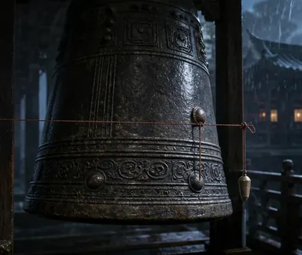
銘文記載鐘體約一千二百公斤；此刻鐘心偏離支點水平線約 0.4 公尺。雨水讓刻痕仍清晰可讀。
這兩個數字最直接能幫你估算什麼？
重力、力矩、有效數字
以 g≈10 m/s²，危險力矩約為 1200×10×0.4＝4800 N·m。
證據：鐘重與偏距
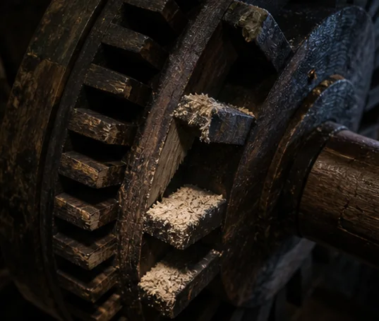
傳動輪只在同一角度缺齒，斷面有新鮮木屑。若是自然老化，損傷不應如此集中。
哪個觀察最能支持『有人動過機關』？
相位、週期運動、機械制動
每次擺至同一位置便失去制動，表示破壞者利用了週期運動。
證據：固定相位缺齒
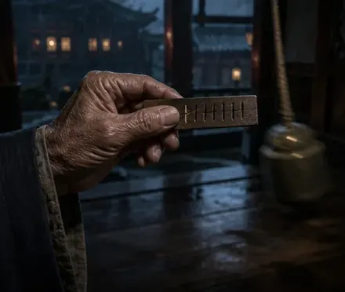
老鐘守反覆說：『八次來回，十六秒；第九次時齒輪空轉。』他把一次來回算作一個完整週期。
依證詞，鐘擺的週期是多少？
週期、資料判讀
T＝總時間÷完整週期數＝16÷8＝2 秒。
證據：兩秒週期
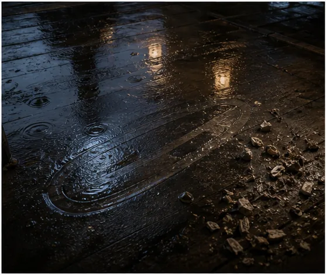
積水中的撞痕呈長橢圓，碎屑主要朝東南散開；鐘並非垂直下墜，而是帶著水平速度擦過地面。
碎屑方向最能告訴你什麼？
速度方向、動量、碰撞
碰撞後碎屑方向保留了入射運動資訊，可回推救援安全區。
證據：東南向動量
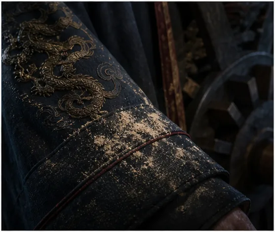
祁望舒袖口沾著與斷軸相同的松木粉，卻聲稱自己從未靠近機關。這不是定罪證據，但足以改變問話次序。
此刻最穩健的做法是？
證據層級、可驗證推論
先把觀察與推論分開；待機關模型重現破壞方式後再追問來源。
證據：袖口木粉
老鐘守的證詞,你信不信?
老鐘守記錄：巨鐘在 16 秒內完成 8 次完整來回。祁望舒卻說週期應是 8 秒，試圖拖延撤離。
一個完整來回的週期 T 是多少？
週期＝總時間÷完整循環數＝16÷8＝2 秒。
鐘體質量約 1200 kg，鐘心對支點的水平偏距約 0.4 m。取重力加速度 g≈10 m/s²。
重力造成的力矩約為多少？
τ＝rF＝0.4×(1200×10)＝4800 N·m。
主繩與鐘架最危險的自然週期約為 2 秒。你能改變救援者推動制動桿的節奏。
哪個推動週期最不容易持續放大振幅？
外力頻率接近自然頻率時容易共振；0.5 秒離 2 秒最遠。
巨鐘危險力矩約為 4800 N·m。你有 300 kg 的石鎮，取 g≈10 m/s²，可沿橫梁調整到支點外 0.5–2.0 m。
拖動石鎮，讓反向力矩至少抵消巨鐘。
正解：支點距離 ≥ 1.6 m（反向力矩＝300×10×距離，須達 4800 N·m）
反向力矩穩住巨鐘，鐘守與樓下百姓全數撤離。柳照微公開為折衡門作證；祁望舒雖逃走，袖口木粉與固定相位缺齒已成為下一章的追查線索。
章末後續：鐘守留下缺指工匠與玄衡舊記兩條線索。折衡門暫得喘息，第一章將由獲救者指出梁上入徑。
你沿木粉追入密道，取得朝廷工坊的半枚銅印。巨鐘在蘇檀的臨時機關下沒有墜落，但鐘守重傷。真相更近了，人情卻留下裂痕。
章末後續：半枚工部銅印與松木粉把追查引向玄衡工坊暗渠。第一章會從較隱密、也更難取得活證的入口開始。
模型救下多數人，卻因證據與推演仍有缺口，朝廷只暫緩查封折衡門。所有失手都沒有消失；它們成為下一章角色不再完全信任你的理由。
章末後續：朝廷暫緩查封，但證鏈仍有缺口。第一章必須以工坊機關重新證明墜鐘不是妖術，先前失手也會被記入質疑。
一枚工部銅印，兩條抵達真相的路
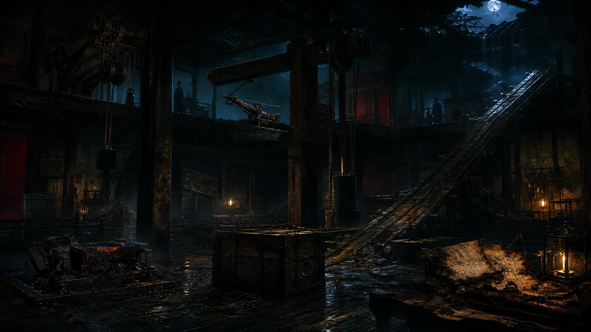
柳照微鐘守醒了。他記得改繩之人左手缺了一指，腰牌上有玄衡工坊的舊記。你先救人，換來了這句誰也奪不走的證詞。
蘇檀工坊正門被封，但鐘守還記得維修滑車的入徑。我帶你走梁上；那條路慢，卻不會驚動藏在裡面的人。
沈硯墜鐘案仍有疑點。唯一能追的線索，是斷軸上的松木粉與祁望舒去向；若先前追入密道，手中還多了半枚工部銅印。
祁望舒你既敢追來，就拿這枚印去玄衡工坊問。只是從暗渠進去的人，看到的真相通常也見不得光。
旁白玄衡工坊停造十年，今夜卻有規律的撞擊聲從地下傳來。六組機關彼此牽連，像有人把整座工坊改成了一道會殺人的題。
蘇檀我找到一名被鎖住的學徒。他說師父裴無咎三日前來過，留下『別信最省力的路』，之後便被押往河運碼頭。
沈硯省力不等於省功。若有人用滑輪掩飾搬運重量，真正不能造假的，是距離、摩擦與能量去了哪裡。
柳照微先查完機關，再決定是否相信學徒。若現在逼問，他也許會說得更快；只是第二次見面時，未必還願意說真話。
如何對待受困學徒？
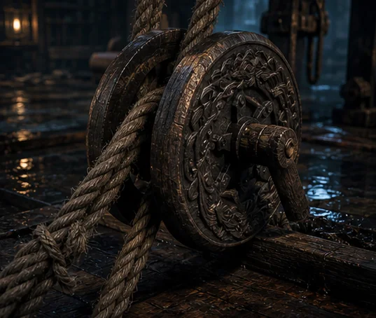
兩組動滑輪承托同一木箱。自由端繩索留下四段等長磨痕，箱體升高一尺時，拉繩端移動約四尺。
忽略摩擦，這套滑輪可把拉力降為重物重量的多少？
滑輪、機械利益、功
理想狀態下，承重繩段數約等於機械利益；省四倍力，要拉四倍距離。
證據：四股承重繩
柳照微滑輪溝槽殘留與鐘樓主繩相同的黑蠟，四股承重的改繩手法也完全一致。墜鐘不是孤案；有人先在工坊反覆試過這套繩路。
A 線獲救鐘守認出繩結是缺指工匠所打，活證第一次與物證相合。
B 線半枚銅印背面的四道刻痕，正好對應四股承重繩；暗渠入口不是臨時挖成。
答錯：滑輪被追兵放落砸裂，黑蠟與繩槽方向無法完整比對。你仍知道它可省力，卻失去把工坊與墜鐘案直接相連的痕跡。
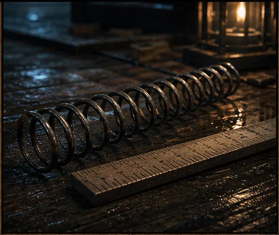
同一彈簧分別掛上 1 kg 與 2 kg 砝碼，伸長量由 5 cm 增為 10 cm，仍在可恢復範圍內。
哪項推論最符合量測？
彈性、虎克定律
在彈性限度內，外力加倍、伸長也加倍，符合虎克定律。
證據：線性伸長
蘇檀彈簧在正常伸長區保持線性，唯獨末端被人多壓了一格；那一格恰好會讓落銷在鐘擺第九次回程時彈開。破壞者不是隨手拆械，而是在校準失效時刻。
A 線學徒指出末格旁原有裴無咎的禁用朱記，朱記後來被刮除。
B 線祁望舒在暗渠找到被刮下的朱漆，證明有人刻意抹去禁用標示。
答錯：彈簧脫匣後永久變形，末端那一道過壓刻痕失去可重做性。蘇檀只能保留傷痕位置，無法證明它原本會在第九次回程落銷。
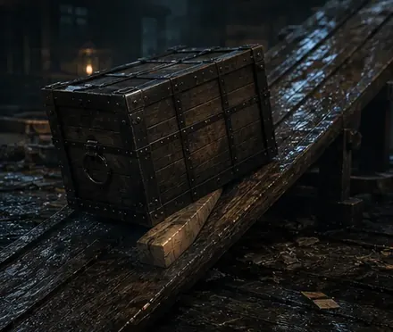
同一木箱沿長斜軌推上二樓，比垂直吊起所需的力小，但路程更長。軌面油污在轉角處突然中斷。
忽略摩擦，使用斜面改變了什麼？
功、斜面、能量守恆
理想簡單機械不減少總功；它用較長距離換取較小作用力。
證據：斜面換距
祁望舒斜軌以長距離換小力，足以讓少數人把重箱悄悄送入暗渠。油污一路延伸到河運封板，說明工坊不是製造終點，而是把機關零件轉送上船的中繼站。
A 線學徒補出斜軌末端的秘密石灣，往後可冒充修械匠登船。
B 線銅印能開啟斜軌末端的官封，證明暗運得到官署掩護。
答錯：追兵潑沙吸走油污，斜軌仍能計算，通往河運封板的連續痕跡卻斷了。下一章只能靠章末所得的密圖或名冊尋船。
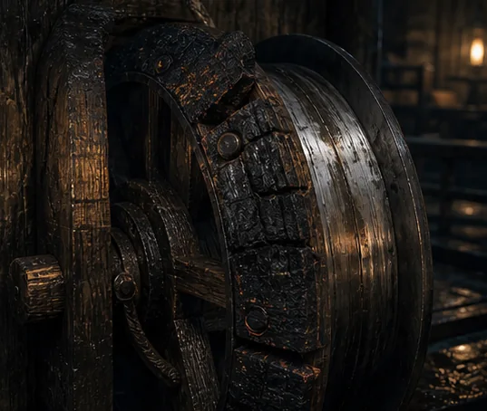
制動木片表面焦黑，附近沒有火源。重箱下降時，輪緣長時間摩擦煞片，最後才停止。
重箱減少的機械能主要轉化成什麼？
摩擦、能量轉換
摩擦把機械能轉為內能；焦痕能回推制動曾承受大量能量。
證據：摩擦生熱
蘇檀煞片焦痕集中在最後一次重載，不是長年磨耗。有人故意鎖死制動，想在貨物送走後燒毀吊架與帳頁；墜鐘案與滅證使用了同一種『讓故障看似耗損』的偽裝。
A 線柳照微先帶學徒退出煙道，保住能指認最後一批貨的人。
B 線祁望舒封住暗渠風口，保住半焚名冊，卻讓學徒仍困在高架。
答錯：煞片被冷水潑裂，焦層次序混成一片。你能說明摩擦生熱，卻不能證明鎖死發生在最後一批貨離場之後。
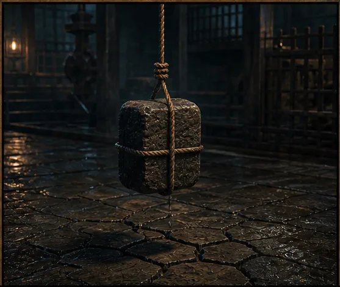
木箱質量約 200 kg，被提升 5 m。取 g≈10 m/s²，箱底刻著通往河運碼頭的批號。
木箱增加的重力位能約為多少？
重力位能、單位
ΔU＝mgh＝200×10×5＝10,000 J。
證據：萬焦耳配重
柳照微兩百公斤配重下降五米釋放的一萬焦耳，正好只夠開啟暗渠石門一次。木箱不是普通貨物，而是一次性啟門鑰匙；用完後便會落水，讓入口自行封死。
A 線學徒知道如何反拉配重，能替眾人保留撤離路。
B 線銅印能讓官封石門延遲閉合，但使用後會留下擅闖封庫的罪名。
答錯：配重提前墜入井底，門縫立即收窄。你失去驗證一次性啟門能量的機會，也迫使同行者提早決定救人或追帳。
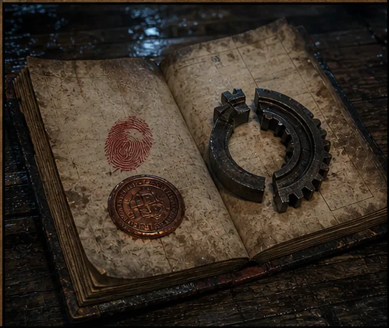
名冊的貨重欄被改小一半，但繩索磨痕與滑輪配置顯示工坊實際搬運量沒有減少。末頁寫著『逆流舟』。
要驗證名冊造假，最有力的交叉證據是？
模型驗證、功、證據鏈
由承重繩段、拉繩距離及提升高度，可獨立估算實際搬運功與貨重。
證據：虛報貨重
沈硯由實際搬運功反算，末批貨重遠高於名冊。被刪去的重量旁反覆出現『逆流舟』與同一個衡九卷號；工坊運走的不是私貨，而是一整套尚未登記的校準機件。
A 線活著的學徒能證明名冊曾被工頭重抄，公開副本因此具有證人。
B 線官牒與銅印讓名冊可直接送入河運稽查，但證人仍可能被說成折衡門同黨。
答錯：名冊餘頁被火舌吞去，逆流舟三字只剩模糊墨影。你仍可循河運封板追船，卻失去虛報重量與官帳同筆的直接證明。
四股繩共同承重，重箱重量約 8000 N。忽略摩擦。
維持平衡所需拉力約為？
F＝8000÷4＝2000 N。
彈簧常數 k＝400 N/m，被壓縮 0.20 m。
此刻彈力大小為？
F＝kx＝400×0.20＝80 N。
200 kg 配重下降 5 m，取 g≈10 m/s²。
最多釋放多少重力位能？
mgh＝200×10×5＝10000 J。
若平均摩擦力為 2500 N，要耗散 10000 J。
至少需要多長制動距離？
W＝Fd，所以 d＝10000÷2500＝4 m。
工坊將塌。你只能先帶走一樣能改變後續局勢的東西。
河水不說謊，船上的人會
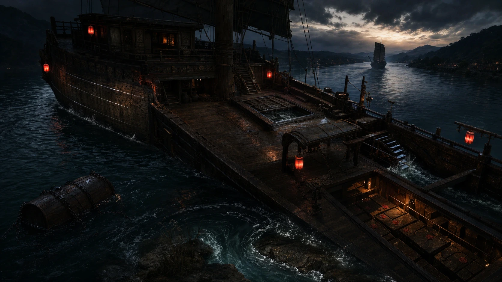
蘇檀你帶學徒活著離開，他便把工坊密道圖補成了河道圖。逆流舟每逢退潮會停靠一處沒有記在官圖上的石灣。
柳照微船家願意讓我們扮作修械匠登船。這份信任來自你先前救下的人；若動手太早，整船百姓都會被當作同黨。
祁望舒名冊公開後，朝廷給了你一紙查驗官牒。逆流舟已知道我們會來，所以每一只貨箱都可能是誘餌。
沈硯官牒能逼船停下，不能逼河水替人作偽。吃水、排水體積與壓力差，會說出真正的貨重。
江濯月我是船主江濯月。此舟逆流不是靠妖術，而是借岸邊回流與暗輪省力。你們若要查貨，先證明不會把船弄沉。
旁白甲板下傳來不規則水聲。六處現象互相矛盾：貨單很輕，船卻吃水很深；艙門封死，水線仍持續上升。
沈硯先分清浮力、壓力與流速。若只是算對公式卻選錯觀察位置，答案一樣會害死人。
江濯月上游還有一艘黑帆船。你若查出逆流舟為何下沉，我會告訴你裴無咎被送去了哪裡。
先把有限人手派往哪裡？
船身今日吃水比空船深 0.40 m。水線附近船身截面積約 50 m²，淡水密度取 1000 kg/m³。
這段新增排水體積對應的額外質量約為？
浮力、排水量、密度
新增排水體積約 50×0.40＝20 m³，對應淡水質量約 20,000 kg。
證據：兩萬公斤暗貨
江濯月吃水比貨單所列深四十厘米，對應兩萬公斤未登記重量；而船艏船艉下沉近乎相同，表示暗貨被人按平衡預先分艙，不是臨時藏入。
A 線學徒密圖標出一處不存在於公開艙圖的長形空腔。
B 線官牒貨單的總重與實際吃水矛盾，江濯月不得不讓你查艙。
答錯：追兵趁浪刷去舊吃水痕，你只能量到此刻水線，失去證明暗貨早已在港內裝妥的時間差。
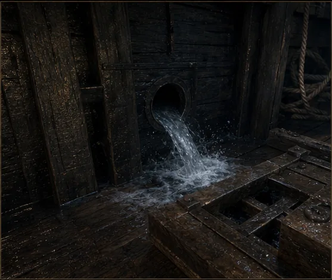
艙門外水深 2 m，門內接近大氣壓。裂縫越靠下，噴水越急。取 ρ＝1000 kg/m³、g≈10 m/s²。
門外水造成的表壓約為？
液體壓力、深度
p＝ρgh＝1000×10×2＝20,000 Pa，越深壓力越大。
證據：兩萬帕水壓
蘇檀兩萬帕水壓足以把鬆動艙門推開；門栓卻是從內側預先磨薄，只等船到急流最深處自行斷裂。沉船時間與地點都被寫進材料厚度。
A 線提前疏散的下層乘客帶回一截內側門栓，證明破壞從艙內發生。
B 線正面查驗迫使船吏封艙，反而讓磨薄門栓保持原位。
答錯：艙門在測量前整片崩離，磨薄方向落入水中。你能計算水壓，卻難以證明這不是自然鬆脫。
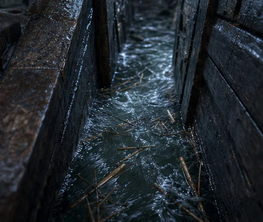
導水管在水輪前縮窄。穩定流動下，寬處截面積為窄處兩倍。
不可壓縮流體在窄處的平均流速約為寬處的幾倍？
流量、連續方程
連續方程 A₁v₁＝A₂v₂；面積減半時，流速加倍。
證據：縮口增速
江濯月縮口使水速加倍，暗設水輪因此在急流中取得足夠轉速，帶動一條通往舵室的反鎖索。進水與失舵被安排在同一時刻，確保船無法自行返岸。
A 線修械匠身分讓你能在水輪啟動前拆開護罩。
B 線官差在場使船吏不敢停輪，反鎖索因此完整暴露。
答錯：水輪過速折斷，反鎖索縮回艙壁。沉船仍可阻止，但誰把兩套機關連在一起變得難以證明。
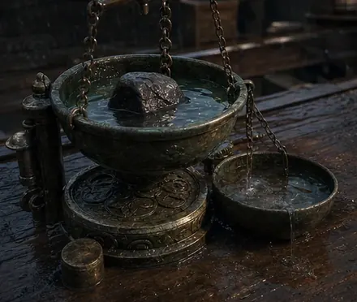
木桶總體積 0.50 m³，完全浸入淡水時仍由鐵鏈壓住。取 g≈10 m/s²。
桶受到的浮力約為？
阿基米德原理
F浮＝ρVg＝1000×0.50×10＝5,000 N。
證據：五千牛頓浮桶
柳照微封蠟浮桶提供五千牛頓浮力，足以在沉船後托起一只卷匣。桶底不是救生繩，而是只通往暗貨夾層；幕後者準備讓人沉下，讓資料浮走。
A 線已疏散乘客能指認浮桶從未列入救生器具。
B 線官牒封條與浮桶蠟印同號，官署至少替這只卷匣留過通行。
答錯：浮桶纜線先行斷裂，卷匣沉入夾層深處。你失去『保卷棄人』的直接機關證明。
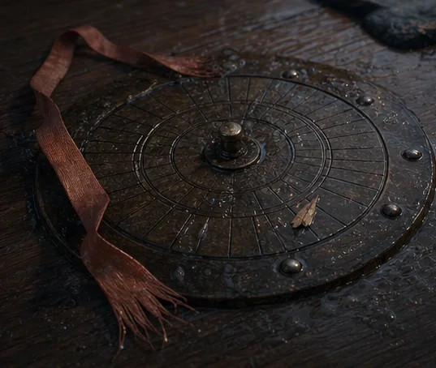
主河道向東 3 m/s，岸邊回流向西 1 m/s。船若相對水向西 2 m/s，選錯河道便無法逆流。
船在岸邊回流區相對岸的速度為？
相對速度、向量
同方向速度相加：船相對水向西 2，加上水向西 1，合為向西 3 m/s。
證據：借流逆行
江濯月岸邊回流可讓小船借流向西三米每秒。河石上同樣的流紋記號一路指向斷雲關；黑帆接應船不是逃向下游，而是沿不易察覺的逆流帶上山。
A 線江濯月因你先救乘客，願意交出完整河圖與沿岸接應。
B 線她只給出流速，不給盟印；追船仍可行，但沒有船工替你作證。
答錯：暴雨抹去河石流紋，江濯月仍能憑經驗追流，卻不能把路線變成可交叉驗證的地圖證據。
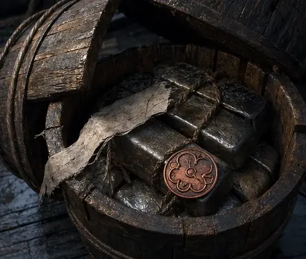
貨單只有藥材，艙底卻有密封鉛箱。若序章取得銅印，可看出封蠟偽造；若救下鐘守，則能對上他記得的批號。
哪項量測最能不開箱驗證暗貨總量？
浮力平衡、證據鏈
船漂浮平衡時，總重等於浮力；排水量可獨立驗證貨單總質量。
證據：排水量證偽
沈硯排水量證明夾層重量不可能只是貨箱。底板下藏著拆分的衡輪、黑羽箭匣與裴無咎半頁驗算；同一批貨將工坊、沉船與斷雲關連成一線。
A 線活乘客指出黑羽箭匣由一名採藥客看見，第三章將有活證帶路。
B 線官封夾層保存裴無咎殘頁，可直接以驗算曲線追查藏弩。
答錯：夾層進水後字跡暈散，只剩黑羽與半段曲線。你知道目的地與武器相關，卻失去工坊卷號的連續筆跡。
完全浸入水中的密封艙排開 3 m³ 淡水，取 g≈10 m/s²。
所受浮力約為？
F浮＝ρVg＝1000×3×10＝30,000 N。
裂縫位於水面下 1.5 m，面積 0.02 m²。取 ρ＝1000、g≈10。
水對補片的推力約為？
p＝15000 Pa，F＝pA＝15000×0.02＝300 N。
主流向東 4 m/s，船相對水向西 3 m/s。
船相對岸如何運動？
以東為正：4＋(−3)＝＋1 m/s，因此仍向東。
船與貨物總質量 30,000 kg，最多只能再增加 5 m³ 排水體積。
淡水中最多可承受的額外質量約為？
額外可排水質量＝ρV＝1000×5＝5,000 kg。
逆流舟暫時止沉；黑帆船正帶著裴無咎的線索離開，而下層乘客仍未全數撤出。
箭走曲線，人心也有偏向
江濯月逆流舟救下的人裡，有位採藥客看見黑帆船在斷雲關卸下一箱黑羽箭。沿河石留下的記號，能帶你避開官道伏兵。
柳照微你先前保住一船人，才換來這條山路與活證。採藥客願意同行，但別讓他又成了別人設好的餌。
沈硯師父殘頁畫著一條下墜曲線，旁邊只寫『箭不走直線』。黑帆船留下的變形箭頭，正好刻有斷雲關記號。
祁望舒江濯月不會替傷亡開路，但殘頁與黑箭已夠我們追上山。此行沒有嚮導，先被看見的人便會先挨箭。
顧玄策霆磁司顧玄策，奉命接管斷雲關箭案。官勘說箭由北塔直射而來；可我量過孔洞高度，那條直線穿不過第二面石牆。
旁白風旗向東，兩面石牆卻留下高低不同的箭孔。距離繩、水漏、車轍與變形箭頭彼此咬合，像有人刻意把一條拋物線說成直線。
蘇檀先把速度拆成水平與鉛直方向。重力只改變鉛直運動；若連橫風與移動車架也算進去，藏弩的位置便無處可躲。
顧玄策山口仍有人監視。你要把完整推演交給我共同查辦，還是先藏住證人與殘頁來源，再自行驗箭？
如何處理手中的來源與推演？
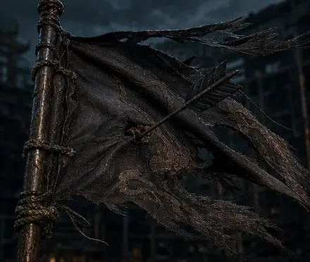
斷裂風旗持續向東飄。若箭離弦後飛行 2 秒，平均橫風使箭獲得向東 3 m/s 的速度分量。
只看橫風造成的偏移，箭約向東偏多少？
速度分量、位移、向量
橫向位移約為 v×t＝3×2＝6 m；方向必須與風旗一致。
證據：六公尺風偏
顧玄策兩秒飛行會被橫風吹偏六米，官稱由正塔直射的箭卻沒有相應偏移；真正箭道必須從受山壁遮風的低處開始。
A 線採藥客指出低崖當夜曾停著覆布木車。
B 線裴無咎殘頁上的橫向修正量恰為六米。
答錯：殘旗被箭雨扯走，風向只能由零散口供估計；官署仍可說偏差來自陣風。
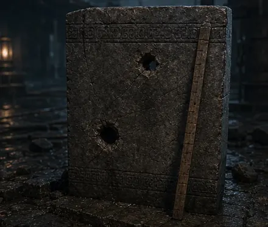
第一面牆的箭孔比第二面牆高。兩牆間沒有折射物或第二名射手，箭頭方向也一致。
哪個模型最能解釋箭孔逐漸降低？
拋體運動、重力加速度
水平拋射同時保有水平速度並受重力向下加速，所以軌跡不是直線。
證據：下墜箭道
沈硯雙牆箭孔形成向下彎曲的拋物線，不可能是官版所稱的直射妖箭。沿曲線反推，箭源位於低崖後方而非塔頂。
A 線活證願意站在牆孔旁重述當夜所見。
B 線祁望舒封存兩牆拓片，確保孔位不被守關者填補。
答錯：牆孔被碎石撞裂，曲線只剩一點；你可否定直射，卻難以精確定位低崖。
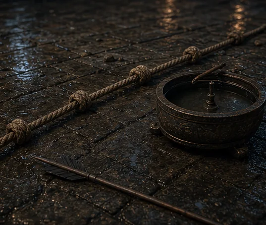
藏弩到第一箭孔的水平距離為 40 m；試射箭的水平速度分量約 20 m/s。
箭飛到第一面牆約需多少時間？
等速度、時間、水平分量
水平運動近似等速，t＝x÷v＝40÷20＝2 秒。
證據：兩秒飛時
柳照微四十米距離與二十米每秒水平速度給出兩秒飛時，恰與關門報時鐘的第二響重合。射手利用鐘聲遮掩弩機釋放，不是臨時伏擊。
A 線江濯月帶來的河圖標記能校正距繩起點。
B 線殘頁上的兩秒記號證明裴無咎曾驗算這套射程。
答錯：水漏被打翻，飛時只能用箭孔間距估算；兩秒與報時鐘的重合失去直接紀錄。
木車向東行駛 5 m/s；車上弩手也向東射箭，箭相對木車速度為 20 m/s。
地面觀察者量到箭向東的速度約為？
相對速度、參考系
同一直線同方向相加：20＋5＝25 m/s。
證據：廿五米每秒
江濯月移動車架讓箭相對地面達二十五米每秒，足以製造『箭從更遠處飛來』的假象。覆布木車不是受害目標，而是可移動藏弩。
A 線採藥客認出車轍通往地爐谷。
B 線黑帆殘頁的曲線在移動參考系下完全吻合。
答錯：車轍被急雨沖散，移動方向失去連續痕跡；箭速仍成立，卻難以證明弩架曾在車上。
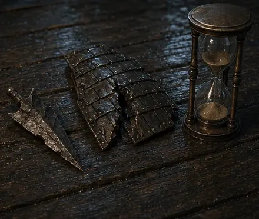
箭質量 0.20 kg，以 50 m/s 撞上護甲後在 0.05 秒內停止。忽略反彈。
護甲對箭的平均作用力大小約為？
動量、衝量、平均力
動量改變量為 0.20×50＝10 kg·m/s；平均力約 10÷0.05＝200 N。
證據：二百牛頓衝擊
蘇檀箭頭在短時間承受約兩百牛頓平均力仍未碎裂，合金硬度遠高於山寨常用鐵。表面淬紋與地爐谷外流的試刃相同。
A 線採藥客曾替地爐工匠送藥，能指出廢冷渠。
B 線密箭尾碼列出排渣窯道的升溫順序。
答錯：箭頭被錯誤撬取而崩裂，淬紋無法完整比對；仍能估算衝量，產地證明卻變弱。
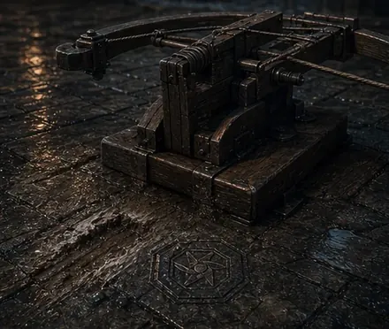
重弩連架質量約 60 kg。射出箭矢的向前動量為 12 kg·m/s，地面留下一小段向後擦痕。
忽略外力，弩架後退速度大小約為？
動量守恆、反衝
總動量守恆，弩架需有等量反向動量；v＝12÷60＝0.20 m/s。
證據：反衝藏弩
顧玄策弩架反衝速度與地面退痕吻合，固定座下還壓著一片衡九銅屑。射手拆走弩身，卻帶不走整座架子留下的反向動量。
A 線活證可指認拆弩黑衣人逃向地爐谷。
B 線銅屑卷號與裴無咎密箭完全相同，可直接追窯道。
答錯：退痕被守關者刮平，弩架反衝只能以模型估算；官署仍可把銅屑說成後來掉落。
一支箭的水平速度為 40 m/s、向上速度為 30 m/s。
離弦瞬間的合速度大小為？
兩分量互相垂直，速率＝√(40²＋30²)＝50 m/s。
箭水平飛行 40 m，水平速度 40 m/s，取 g≈10 m/s²，忽略空氣阻力。
這段時間因重力下墜多少？
飛行時間 1 秒；下墜量＝½gt²＝5 m。
0.20 kg 的箭以 50 m/s 飛行。
箭的動量大小為？
p＝mv＝0.20×50＝10 kg·m/s。
護臂在 0.05 秒內使箭的動量減少 10 kg·m/s。
平均阻力大小約為？
F＝Δp÷Δt＝10÷0.05＝200 N。
藏弩已破，第二輪箭雨卻朝採藥客與關卒落下；黑衣人同時帶著裴無咎的密箭逃向地爐谷。
不見明火，裂刃仍在發熱
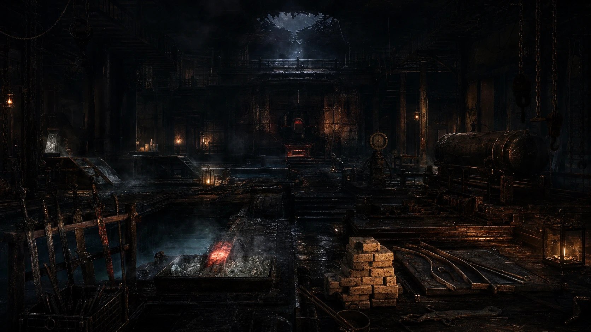
顧玄策斷雲關的採藥客其實做過燼火堂學徒。他活著指出一條廢冷渠；從那裡進去，能先碰到被困工匠。
柳照微救下的人又替我們開了一扇門。只是冷渠正在升溫，若拖延太久，這條路會先變成蒸籠。
祁望舒密箭暗碼不是地名，而是一組合金比例與升溫次序。對上山腹礦脈，唯一符合的入口是排渣窯道。
沈硯師父把爐溫曲線藏進配方，表示燼火堂有人會看懂。穿過渣道可直達爐心，也可能先撞見守著證物的人。
霍離燼火堂霍離。這裡沒有妖火，是封閉氣室、熱脹冷縮與一批被故意淬裂的刀。你們若把閥門開錯，整座谷會被蒸汽掀開。
旁白銅鐵長桿伸長不同，雙金屬片彎向一側；壓力釜低鳴，冰水槽冒出白霧。六處熱學現象共同指向一場被偽裝成爐災的試驗。
蘇檀溫度不是熱量。先分清比熱、潛熱、膨脹與定容氣壓，再決定要注多少水；多倒一桶，也可能讓釜壓升得更快。
霍離工匠在東側，試驗名冊在爐心。你要先疏散人手，還是封住所有出入口，防止證物被調包？
先把有限時間用在哪裡？
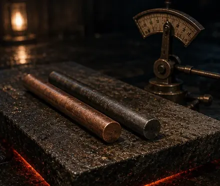
同長的銅桿與鐵桿一起升高相同溫度。量測顯示銅桿末端移動較多，兩桿都未熔化。
最合理的判斷是？
熱膨脹、線膨脹係數
相同原長與溫差下，伸長量 ΔL＝αLΔT；伸長較多代表線膨脹係數較大。
證據：銅桿多伸
霍離銅桿受熱伸長較多本是可預測現象，爐門導軌卻故意混用兩種材料且不留伸縮縫；升溫後，救援門必然先於爐心卡死。
A 線獲救採藥客指認導軌是在黑羽箭到貨後連夜更換。
B 線密箭暗碼中的第一段升溫次序，正好對應導軌閉鎖時刻。
答錯：長桿在量測前被冷水沖彎，材料差異仍在，原本的伸長方向與門縫對應卻無法重做。
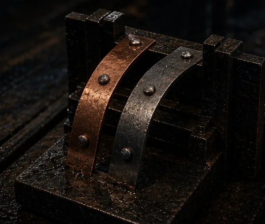
兩種金屬緊貼成片，受熱後向膨脹較小的一側彎曲，並帶動安全閥門。
雙金屬片彎曲的主因是？
熱膨脹、溫控機構
兩層受熱伸長不同，又彼此黏合，因而產生彎曲，可用作溫控開關。
證據：熱彎安全片
蘇檀雙金屬安全片原應受熱彎向斷火端，現場卻被倒裝，升溫時反而把風門推得更開。這不是失效，而是把安全機關改造成增溫命令。
A 線活證工匠能說出原安裝方向，霍離願意公開拆驗。
B 線祁望舒先封住倒裝鉚釘，卻沒有工匠敢在官署前署名。
答錯：雙金屬片被高熱燒脫，彎曲方向失去原位參照；倒裝只能由鉚孔推測。
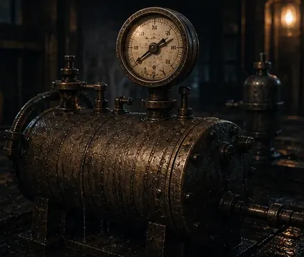
密閉定容氣室由 300 K 加熱到 450 K，氣體量近似不變，原壓力為 P。
加熱後壓力約為多少？
絕對溫度、定容氣體
定容理想氣體有 P/T 近似不變，因此 P₂＝P×450÷300＝1.5P。
證據：一點五倍釜壓
沈硯定容升溫使釜壓增至一點五倍，而壓力表紅線恰被移高到新值之外。衡九卷號旁寫著『容差可再上修』；有人在測試工匠能承受多少風險。
A 線霍離拿出舊紅線拓本，可證明刻度在事故前被改。
B 線密箭暗碼列出的目標壓力與新紅線相同，試製與箭批屬同一計畫。
答錯：壓力表在釜震中碎裂，新舊紅線無法同框；你只能從溫壓關係證明危險，難證明刻度被人移動。
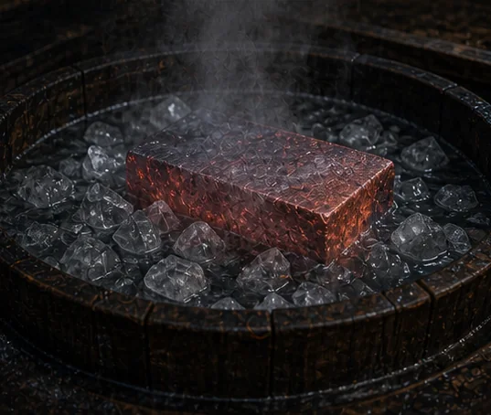
槽內有 0.50 kg、0°C 的冰正融化。冰的熔化潛熱取 334 kJ/kg，先忽略升溫。
使這些冰完全融化約需多少熱量？
潛熱、相變
Q＝mL＝0.50×334＝167 kJ；相變時吸熱但溫度可暫時不變。
證據：百六十七千焦
霍離半公斤冰融化可吸收大量熱，淬槽原能穩住爐外溫度；槽底卻設有延時放水孔，只在試刃完成後抽走冷源，使爐壁與箭材同時承受急劇熱差。
A 線採藥客帶來的換藥時刻與放水時刻一致，證明不是偶發滲漏。
B 線排渣暗道能直達孔塞，說明動手者不必經過工坊正門。
答錯：淬槽被蒸汽掀翻，孔塞落入熱泥；延時放水只能由空槽結果推斷。
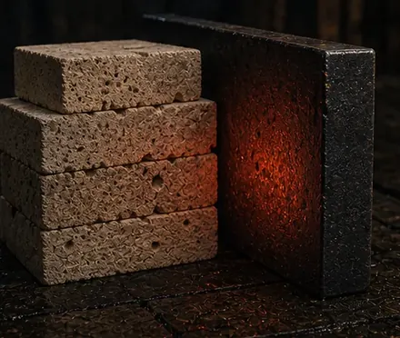
兩種同厚爐磚分隔相同溫差。甲磚每秒傳出的熱量比乙磚少，外牆也更冷。
哪種材料較適合做隔熱層？
熱傳導、隔熱
相同面積、厚度與溫差下，熱流較少代表導熱率較低，隔熱效果較好。
證據：低導熱夾磚
柳照微低導熱夾磚沒有被用來隔開工匠，而是集中包覆無人的外壁，把更多熱流逼向有人作業的內坑。官帳把『保溫效率』寫高，卻刪掉熱最後去了哪裡。
A 線獲救工匠願意把內坑燙傷位置畫進公開證詞。
B 線封存磚樣能證明導熱配置，但沒有受傷者說明實際代價。
答錯：夾磚層在拆取時崩碎，材料導熱仍可比較，原本朝向內坑的配置卻失去位置證據。
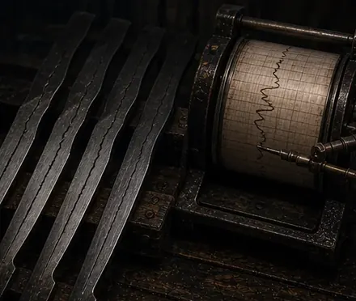
數十把刀都在同一位置出現裂紋；冷卻鼓記錄顯示外層先急冷收縮，內層仍保持高溫。
哪項解釋最符合重複裂紋？
熱應力、冷卻速率、證據鏈
內外溫差使收縮不同步，形成熱應力；批次同紋顯示這是受控製程而非偶發破壞。
證據：批次熱裂
蘇檀同批裂刃的裂紋方向一致，顯示冷卻次序受控；合金成分又與斷雲關黑羽箭相同。刀刃只是失敗樣本，合格箭材已沿漆絲銅線送往雷火盟。
A 線活證能指出漆絲銅線由雷火盟使者驗收。
B 線熱核名冊保存雷火盟東庫卷號，可直接循物追人。
答錯：裂刃被高溫再燒，裂紋邊緣鈍化；產地仍可由合金推測，受控冷卻的批次證明變弱。
2 kg 的水由 20°C 升到 40°C，比熱取 4200 J/(kg·°C)。
吸收的熱量約為？
Q＝mcΔT＝2×4200×20＝168,000 J。
1 kg、0°C 的冰完全融化，熔化潛熱為 334 kJ/kg。
相變吸收多少熱量？
Q＝mL＝1×334＝334 kJ；融化期間溫度仍可維持 0°C。
定容密閉氣體由 300 K 升至 450 K，初壓為 200 kPa。
末壓約為？
P₂＝200×450÷300＝300 kPa。
需移走約 500 kJ 熱量。水最多升溫 25°C，比熱取 4.2 kJ/(kg·°C)。
至少約需多少公斤的水？
m＝Q÷(cΔT)＝500÷(4.2×25)≈4.8 kg，至少約 5 kg。
壓力釜即將越過紅線。東側工匠尚未全數撤出，爐心名冊與熱核試樣也會在洩壓後被蒸汽毀去。
雷能照亮銅線，也能劈開同一門學問
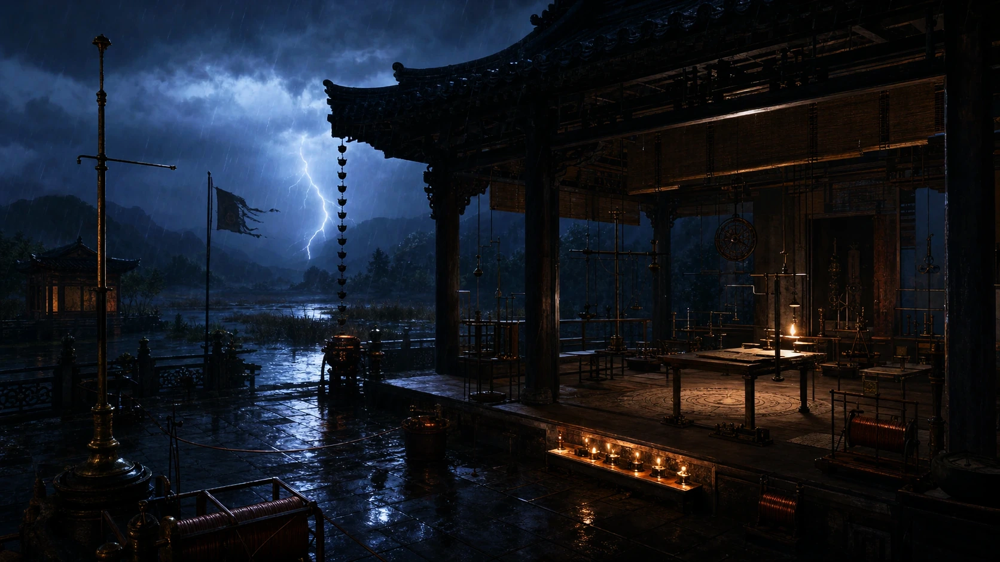
霍離你救下燼火堂眾匠，才有人肯承認冷渠裡那些銅帶不是爐料，而是替雷火盟打造的引雷地網。謝驚弦欠我一批命，我帶你從正門討。
柳照微霍離的匠人願意作證，雷火盟便不能把昨夜試驗說成私鬥。這條路人多、眼也多；我們查到的每一步都會立刻傳遍外壇。
顧玄策你封存的熱核外殼纏著漆絲銅線，名冊末頁又記了雷火盟。裴無咎似乎借地爐高熱測過一組導線，結果全送來驚雷澤。
沈硯沒有燼火堂作證，我們只能循熱核與磁針偏向入盟。這條線更接近師父手稿，也會讓謝驚弦先把我們當成奪卷的人。
謝驚弦雷火盟謝驚弦。朝中說雷是天威，霆磁司說只能封存，我只信可重做的現象。若你真懂格物，就先說明為何銅線一接，磁針便轉。
旁白暴雨穿過外壇。串接燈盞同時明滅，支路燈火卻各自存續；琥珀吸起紙屑，通電線圈推偏磁針。六處現象正把天雷拆成可量的電流、電壓與電阻。
蘇檀先分清串聯、並聯與靜電，再用歐姆定律核對量測。雷擊不是法術；真正危險的是有人把接地銅帶改接進觀測席。
謝驚弦外壇的人要看公開重試，顧玄策卻要先封總閘。你若只能選一邊，今夜之後哪一派還肯把原始紀錄交出來，就看這一步。
如何處理即將開始的重試？
兩盞相同油燈的導電火舌接在同一條閉合銅線上。任一接點鬆開，兩盞同時熄滅；閉合後，兩處量得的電流相同。
哪項判斷最符合這組線路？
串聯電路、電流、斷路
串聯元件在同一路徑上，穩定狀態下流過各元件的電流相同；任一處斷路會使整路中斷。
證據：串聯同流
謝驚弦串聯燈路任一處斷開便全滅，觀測席的警示燈卻被人加裝旁路：燈會先熄，主線仍持續通電。有人要讓眾人誤以為危險已解除。
A 線獲救匠人能指出旁路使用地爐漆絲銅線。
B 線熱核名冊記載同批銅線直接送入雷火盟東庫。
答錯：燈線在過流中熔斷，旁路接點混成焦團；你能說明串聯斷路，卻難證明主線曾被刻意保留。
銅線在木板上分成兩支路，各帶一盞燈。左支路被剪斷後熄滅，右支路仍保持原本亮度。
這項現象最能支持哪個判斷？
並聯電路、支路、電壓
並聯支路跨接在相同兩端；一支路斷路時，其他完整支路仍能導通。
證據：並聯獨立支路
柳照微並聯支路使東庫在觀測席斷燈後仍能獨立取電，且東庫電流恰好供一組高速抄錄輪。危險試驗的真正優先項不是席上人命，而是把雷擊數據完整送出。
A 線盟眾願意當眾斷開東庫支路，迫使數據與人一起接受停試。
B 線祁望舒保留東庫供電以追卷，謝驚弦因此更戒備主角。
答錯：分支盤被雷弧熔合，東庫獨立取電無法完整重做；保卷棄人的設計只剩電流痕跡。
乾燥琥珀棒與絲布摩擦後能吸起未帶電的小紙屑；潮氣升高後，吸引很快消失。
最合理的解釋是？
靜電、電荷轉移、極化
摩擦可轉移電荷；帶電體會使鄰近中性紙屑產生電荷分布偏移。潮氣則讓電荷較快逸散。
證據：摩擦起電
蘇檀琥珀在乾燥時能長久帶電，盟壇卻刻意撤走吸濕水盆，使靜電累積到足以提前點燃引線。『雷先到』的神蹟其實由可控制的乾濕條件製造。
A 線活證能指出撤盆者穿著東庫值守衣。
B 線東庫領物簿記著同夜收回全部水盆，命令來源仍未署名。
答錯：雨水灌入琥珀盤，電荷立即逸散；受傷者口供仍在，現象卻失去重做條件。
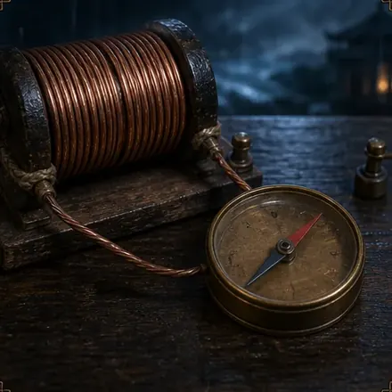
磁針放在線圈旁。銅線通電時磁針向東偏，切斷電流便回復；交換電源兩端後，磁針改向西偏。
哪項結論最完整？
電流磁效應、控制變因、方向
可重複的通斷與反向試驗，把磁針偏轉和電流方向連結起來，是電磁關係的直接現象證據。
證據：電流生磁
謝驚弦通斷與反向電流會使磁針可重複偏轉；地下主線的偏向並不指雷塔，而沿子午線直指玄穹觀星臺。雷火盟正在替下一座機關校一條看不見的方向線。
A 線公開反向試驗讓全盟都看見偏向，不再依賴手稿署名。
B 線裴無咎手稿提供更精確角度，卻只有少數人看過原數。
答錯：磁針在強雷中脫軸，偏向只留下末次刻痕；仍可指北，無法完整展示通斷反向因果。
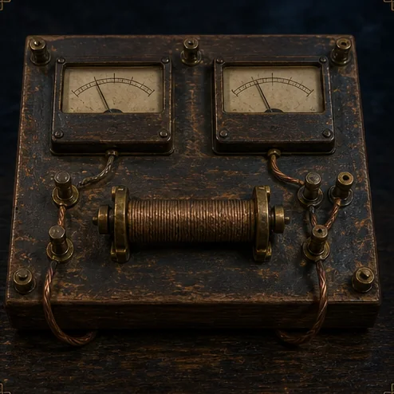
同一段線圈兩端量得電壓 12 V，通過電流 3 A；線圈溫度暫時穩定。
依 R＝V／I，這段線圈的電阻約為？
歐姆定律、電阻、單位
R＝V／I＝12÷3＝4 Ω。必須同時記錄同一元件的電壓與電流。
證據：四歐姆線圈
沈硯線圈實測為四歐姆，官板卻記六歐姆；若照官數配置，觀測席支線會承受更高電流。被改掉的兩歐姆與地爐紅線一樣，都是把危險藏在看似正常的標值裡。
A 線多名盟眾以不同量板重測，四歐姆成為公開結果。
B 線原手稿能證明裴無咎早年寫的也是四歐姆，後改者另有其人。
答錯：量板因接法錯誤過流，指針歸零；官板六歐姆暫時失去現場反證。
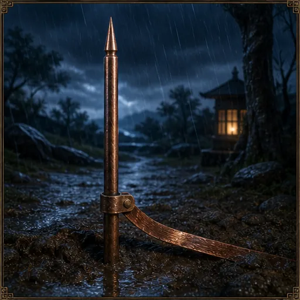
屋脊尖銅桿以厚銅帶連入濕土。被人改過的支線卻繞進觀測席木欄，雨夜焦痕正沿該支線排列。
安全接地銅帶的主要作用是？
接地、電流路徑、用電安全
避雷裝置不能保證無雷擊；它要提供較安全、低電阻的放電路徑。繞入觀測席的支線顯示人為破壞。
證據：接地遭改線
柳照微接地銅帶本應把雷流送入濕地，卻被改接進觀測席下方；低電阻支路的位置與東庫抄錄輪同時完成，證明這場試驗需要活人承受雷流、資料則被安全保存。
A 線獲救盟眾願意共同守住接地總閘並公開署名。
B 線截取手稿可直追觀星臺，但觀測席仍需要謝驚弦決定是否相信主角。
答錯：接地支線遭雷擊熔斷，改接方向只剩地面灼痕；蓄意破壞仍可推定，完整電流路徑難再重做。
一段線圈兩端電壓為 12 V，電阻為 4 Ω。
通過線圈的電流為多少？
I＝V／R＝12÷4＝3 A。
2 Ω 與 4 Ω 電阻串聯後接在 12 V 電源上。
總電阻與總電流最接近哪一組？
串聯總電阻為 2＋4＝6 Ω，總電流 I＝12÷6＝2 A。
6 Ω 與 3 Ω 電阻並聯，先忽略導線電阻。
等效電阻為多少？
1／R＝1／6＋1／3＝1／2，所以等效電阻為 2 Ω。
安全支路兩端電壓 12 V，導通時電流 2 A。
此支路消耗的電功率約為？
P＝VI＝12×2＝24 W。依此功率選擇可承受的導線並切除遭改支路。
雷暴逼近主壇。西廊觀測席仍有盟眾，東庫則存著裴無咎的電磁手稿；接地總閘只能先保住一側。
天象從未說謊，說謊的是替它定名的人
謝驚弦雷火盟觀測者都活著，他們願意在玄穹臺前說明雷夜記錄。寧觀瀾不能再用『儀器受雷』抹去整份星表，只能讓你從正階入臺。
柳照微公開登臺能護住人，也讓每句話都成為朝堂紀錄。若曆表真被改過，我們必須當眾證明是週期與模型出了問題，不是只搶走一張紙。
顧玄策裴無咎手稿記著雷夜磁針偏角；把它疊上城中子午線，偏轉恰好指向觀星臺下方一條未列入官圖的暗階。
祁望舒我們沒有雷火盟活證，正階不會開。磁圖能帶你直入星庫，代價是寧觀瀾見到你的第一眼，就知道你拿了不該拿的手稿。
寧觀瀾玄穹臺曆算官寧觀瀾。新曆說今夜月蝕晚一刻，原始水鐘卻從未支持這個數字。你若要指控司天監，先證明圓周、引力與波動沒有被你自己算錯。
旁白星輪繞軸，繫石沿圓桌疾行；鉛球距離、長短鐘擺、水波與共鳴管各自留下週期。六組量測共同指出：假曆不是抄錯，而是有人故意換掉模型參數。
沈硯先由週期求轉動比例，再核對向心力、距離平方反比與波速。只要其中三套獨立裝置指向同一刻，朝廷蓋印也改不了月影。
寧觀瀾觀測生握有原始水鐘紙，星庫則藏著改曆者名單。你要先把學生送到眾目之下，還是封庫防止最後一頁被換走？
先守住哪一端的證鏈？
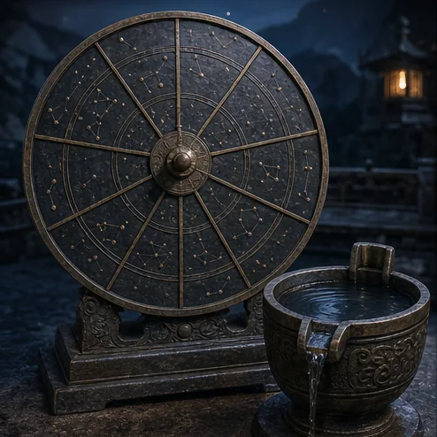
星輪每 24 小時相對刻線轉一整圈，水鐘顯示已過 6 小時；轉速在這段時間近似均勻。
星輪此時應轉過約多少角度？
週期、角位移、比例
6／24＝1／4 圈，因此轉角為 360°×1／4＝90°。
證據：六時四分之一圈
寧觀瀾二十四時星輪六時應轉九十度，官版零位卻提前一格；這不是抄錯日期，而是從起算點就把所有天象向後推移。
A 線雷火盟活證使官員無法在眾目下重設星輪。
B 線磁偏手稿標出原零位，可從星庫暗階直接比對。
答錯：星輪在重測前被守臺人撥回官位，原零點刮痕只剩半段；系統偏移難以完整展示。
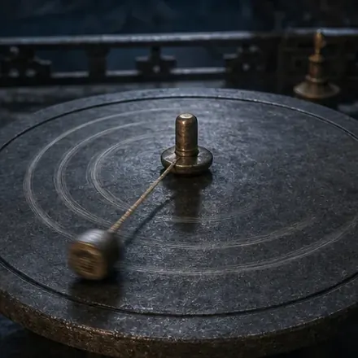
石球以 10 m/s 沿半徑 5 m 的圓案邊緣運動，細繩方向始終指向圓心。
向心加速度 v²／r 約為多少？
等速圓周運動、向心加速度
a＝v²／r＝10²÷5＝20 m/s²，方向指向圓心。
證據：二十向心加速度
沈硯繫石實測向心加速度為二十，官表代入的半徑卻大一倍；官版不是觀測到不同天體，而是悄悄更換模型半徑，製造不存在的失序。
A 線寧觀瀾讓觀測生公開重放繫石，任何人都能再算一次。
B 線裴無咎手稿保留舊半徑，但只有暗階同行者能接觸原頁。
答錯：繫繩在高速中斷裂，實測半徑失去；官表仍可被質疑，卻少一套現場重做。
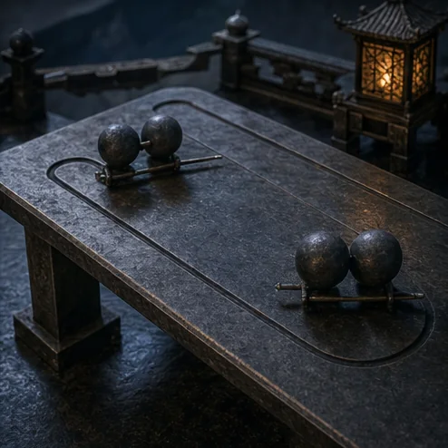
同樣兩顆鉛球先相距 r，再沿槽移到 2r；質量均不改變。密卷以距離平方反比估算彼此引力。
距離改為 2r 後，引力約為原來的多少？
萬有引力、平方反比
萬有引力與距離平方成反比；距離加倍，力變為 1／2²＝1／4。
證據：倍距四分之一力
寧觀瀾距離加倍時引力應降為四分之一，官版卻只減半，等於把平方反比偷偷改成線性。三處改值都會把月蝕預報推向同一個錯誤時刻。
A 線公開算表讓觀測生第一次能拒簽官版結果。
B 線星庫原稿顯示改值命令來自天理局而非裴無咎本人。
答錯：鉛球支架被撞歪，倍距無法保持；平方反比只能由舊表說明，缺少現場對照。
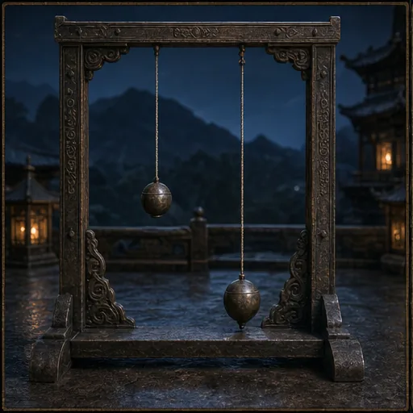
兩擺角度都很小，長擺長度為短擺的四倍。兩顆擺錘材質不同，但質量不影響理想小角度週期。
長擺週期約為短擺的幾倍？
單擺、週期、平方根關係
單擺週期 T 與長度平方根成正比；長度為 4 倍，週期為 √4＝2 倍。
證據：四倍長雙倍週期
柳照微擺長增為四倍會使週期加倍；報時閣暗中換上長擺，讓全城水鐘看似走快。假曆不是預測月蝕，而是先改全城時間再宣告自己準確。
A 線獲救觀測生帶著原始水鐘紙，可公開還原換擺前後差異。
B 線暗階能直取長擺與密曜星圖，但報時閣的學生仍在被扣押。
答錯：長擺被追兵截短，原長與週期關係失去原位證據；水鐘紙仍在，換擺手法卻難重做。
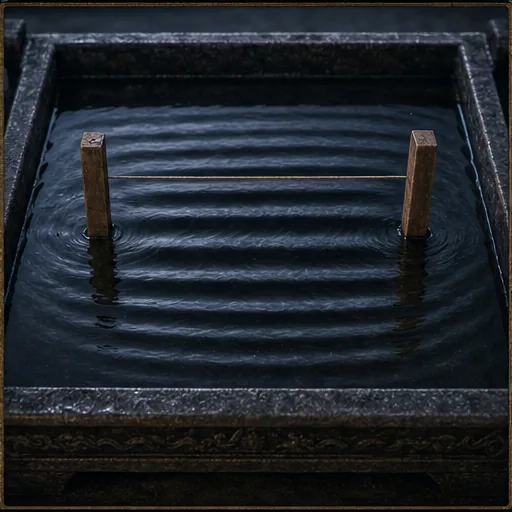
水波速度量得 6 m/s，相鄰兩道波峰距離 2 m；波形穩定且來源固定。
依 v＝fλ，波的頻率是多少？
波速、頻率、波長
f＝v／λ＝6÷2＝3 Hz。頻率表示每秒通過的完整波數。
證據：三赫茲水波
謝驚弦水波速度六米每秒、波長兩米，得到三赫茲；同頻震動沿地下子午線傳入報時閣，正好驅動假鐘。所謂星鳴其實是地底機械的同步信號。
A 線雷火盟活證能公開說明三赫茲信號如何產生。
B 線磁偏手稿能沿地下線找到信號源，卻缺少盟眾署名。
答錯：水盤被放水洗去定距刻線，頻率只能由殘紙反算；跨城同步少了現場重現。
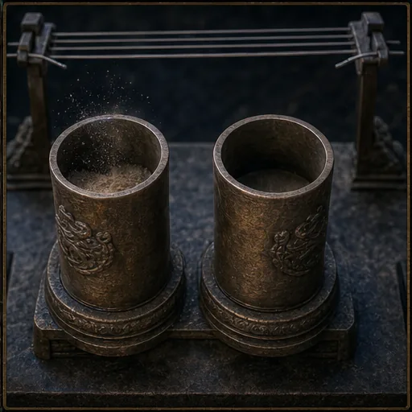
兩支銅管外形相近。細弦以固定頻率振動時，只有其中一管把管口塵粉震起；稍改頻率後，震動迅速減弱。
哪項解釋最符合現象？
共振、固有頻率、證據鏈
共振會在驅動頻率接近固有頻率時顯著放大振幅；所謂『星鳴』其實是可控制的機械聲。
證據：人造共鳴星聲
沈硯雙管在三赫茲驅動附近共振放大，足以讓全臺聽見『星鳴』。管座下藏著裴無咎批註：『若天理只准一條光路，去破鏡城找第二條。』
A 線公開真曆與觀測生能把破鏡城假光案帶上公堂。
B 線密曜星圖在月下顯出直通破鏡坊地下的反光記號。
答錯：共鳴管被敲裂，人工星鳴不能完整重播；批註仍在，但官署可稱那只是裴無咎自辯。
星輪均勻轉一圈需 12 秒。
3 秒內轉過整圈的多少？
3÷12＝1／4，因此轉過四分之一圈。
2 kg 石球以 5 m/s 沿半徑 5 m 的圓周運動。
所需向心力 m v²／r 為多少？
F＝m v²／r＝2×25÷5＝10 N，方向指向圓心。
兩物體質量不變，距離增為原來 3 倍。
彼此引力變為原來多少？
引力與距離平方成反比，因此為 1／3²＝1／9。
校時波在銅管中傳速 12 m/s，波長 3 m。
正確驅動頻率為多少？
f＝v／λ＝12÷3＝4 Hz。以此頻率重現人造『星鳴』，便能拆穿假曆。
月影已落上子午線。報時閣扣著持原始紀錄的觀測生，地下星庫則開始焚毀密曜星圖與裴無咎批註。
鏡中有兩個人，真相卻只有一條光路
寧觀瀾真曆既已鳴城，破鏡坊的商戶願意當眾重做假光。司天監再不能把每一道錯影都說成妖術；但這也等於告訴追兵，我們會從正門來。
柳照微觀測生帶來裴無咎寄出的舊驗簿。末頁沒有求救，只寫著『讓沈硯看見第二條光路』。你師父也許從來不是被人押走的。
祁望舒密曜星圖在月下顯出破鏡坊地下的反光記號。這條路避開公堂，也避開能替你作證的人；暗坊只認手裡的原鏡。
顧玄策裴無咎在星圖背後寫了沈家舊案的驗算號。若那不是誘餌，他是在等你親手翻出朝廷十九年前抹掉的誤差。
旁白雨巷掛滿破鏡，燈火在鏡廊反覆折返。浸水銅尺、凸透鏡、彎曲琉璃與三片單孔板分置六室，像一堂由失蹤者留下的光學課。
裴無咎別再找被綁走的師父了。我是自己離開折衡門。天理衡最初的容差由我定下，朝廷卻把『可承受的誤差』改成了『可犧牲的人數』。
沈硯父親因拒簽那份驗算而死，你收我為徒，是護我、贖罪，還是等我替你完成最後一次校準？
裴無咎三樣都有。先證明鏡裡哪一道光是真的，再決定你要把我的名字放進證詞，還是把原鏡留給下一場更大的局。
面對裴無咎留下的沈家驗簿，你先讓誰讀？
一束燈光先射向平面銅鏡，再反射到刻尺。入射光與鏡面法線夾角量得 35°。
反射光與法線的夾角應是多少？
平面鏡、反射定律
反射定律指出入射角等於反射角，兩角都從法線量起。
證據：三十五度反光
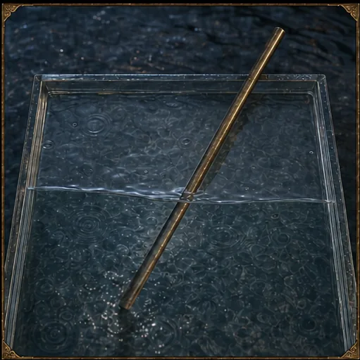
從水面上方斜向俯看，一根筆直銅尺在水面交界處顯得錯位；水下段看起來比實際位置淺。側面近水平看時，並不會憑空變成兩根。
水下段看似上移，最合理的原因是？
折射、視深、虛像
觀察者由上方斜視水中物體，折射光反向延長後會得到較淺的視位置；證物圖採俯視斜上方才符合現象。
證據：俯視折射錯位
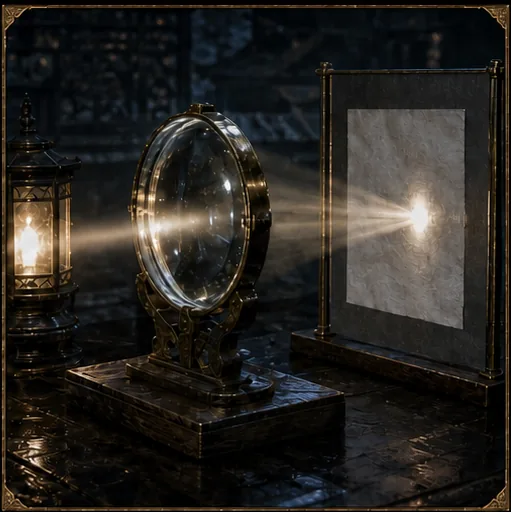
凸透鏡焦距 20 cm，驗簿刻板放在鏡前 60 cm。屏幕可接到上下倒置的清晰文字像。
依 1／f＝1／u＋1／v，像距約為多少？
凸透鏡、薄透鏡公式、實像
1／v＝1／20－1／60＝1／30，因此 v＝30 cm，為可投在屏上的倒立實像。
證據：三十厘米實像
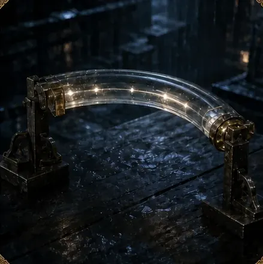
燈光沿彎曲琉璃條傳到另一端；光在琉璃與空氣邊界的入射角大於臨界角，外側幾乎看不到漏光。
光能沿彎曲琉璃傳遞主要依靠什麼？
全反射、臨界角
光由光密介質射向光疏介質且入射角大於臨界角時，發生全反射。
證據：琉璃全反光路
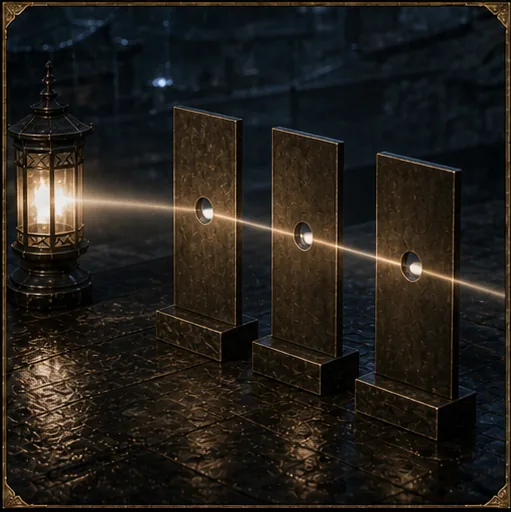
燈、三片各只有一個小孔的銅板與白屏排成一直線時，屏上才出現亮點；中間一片稍微橫移，亮點便消失。
這組現象最直接驗證什麼？
光的直線傳播、實驗控制
三孔必須共線才能讓光通過，這是光在均勻介質中近似直線傳播的直接驗證。
證據：三孔共線光證
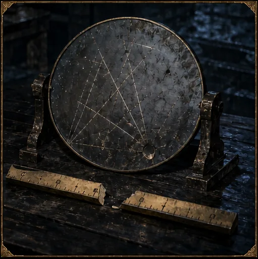
校準簿同時記錄入射角、視深、焦距與屏距；其中一頁把真實量測與官版數字以相同筆跡並列。
要證明官版光路被改，最可靠的做法是？
模型驗證、交叉證據、測量不確定度
多套基於不同物理關係的重複量測若指向同一偏差，比單一署名或外觀更有證明力。
證據：三路互驗原簿
光線與鏡面夾 25° 入射平面鏡。
入射角（相對法線）與反射角各為多少？
法線與鏡面垂直，因此入射角為 90°－25°＝65°；反射角同為 65°。
由空氣中斜向俯看水底刻線，折射率近似 n水＝4／3。實深約 1.2 m，採近法線估算。
視深約為多少？
近法線觀察時，視深約為實深÷折射率＝1.2÷(4／3)＝0.9 m。
凸透鏡焦距 10 cm，物體置於鏡前 15 cm。
清晰實像約落在鏡後何處？
1／v＝1／10－1／15＝1／30，所以屏應置於鏡後約 30 cm。
三片單孔板只有完全共線時能在屏上留下光點；官吏聲稱光可任意繞過銅板。
哪個重做最能反駁官吏？
控制單一孔板位置並反覆記錄亮點，能直接建立共線與通光的因果關係。
公堂追兵已入坊。裴無咎要你在兩樣東西中先保住一樣：能讓百姓重做的鏡證，或記著天理衡原始容差的母鏡。
最省力的機關，可能最耗人的命
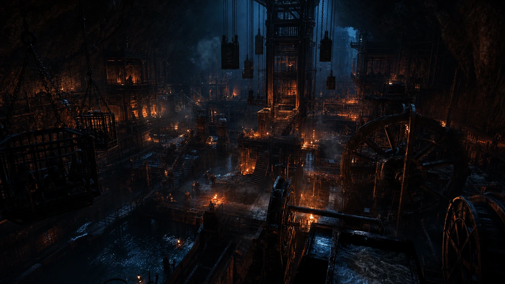
霍離破鏡坊的公開副本傳進百工監，囚匠以敲管節拍回應。我們從排風渠進去，他們會替你指出哪座機關吃掉了工人的功。
江濯月河運盟能送走第一批人，但升井機若先停，最深層的工匠會被困在水線下。這次救人也得算功率。
顧玄策母鏡邊框正是百工監總尺。拿它貼上升井機刻度，官版傳動比少寫了一倍；有人把損耗全算到囚匠身上。
裴無咎若先奪零度母尺，天理衡就再也不能換一把尺說話。若先開牢門，證物可能被沉井。別問我該選哪個，我已替別人選過太多次。
旁白鐵鏈吊著石閘，複滑輪抬升囚籠，巨大飛輪把人力存成轉動。牆上帳簿只記輸出，不記摩擦、廢熱與倒下的人。
蘇檀六座機關共用一條主軸。若只求瞬間最快，牢門會開，升井卻會反轉；必須先分清功、功率、效率與平衡。
謝驚弦我能帶盟眾切斷外部電閘，卻不能替你決定把有限能量送往救人升井，還是送往存放零度母尺的封庫。
沈硯先讓每一焦耳都有去處。省力機械沒有省掉功，官帳抹去的損耗，正是他們抹去的人命。
主軸尚有一刻可用，先分配給哪一端？
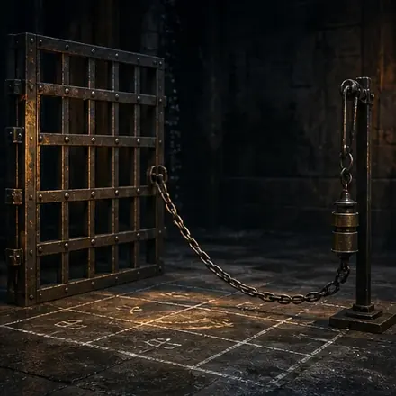
石閘重 6000 N，以定滑輪改變施力方向；忽略摩擦時不改變力的大小。
只用一個定滑輪緩慢拉起石閘，至少需多大拉力？
定滑輪、力的方向
單一定滑輪只改變施力方向，理想機械利益為 1。
證據：六千牛頓石閘
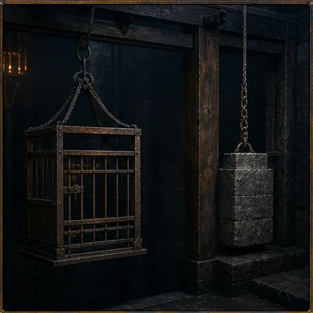
囚籠與人總重 12000 N，由四股繩承重，上升 3 m。忽略損耗。
拉繩端至少需移動多遠？
複滑輪、功守恆
四倍省力以四倍距離交換，籠升 3 m，繩端需移動 12 m。
證據：十二米拉繩
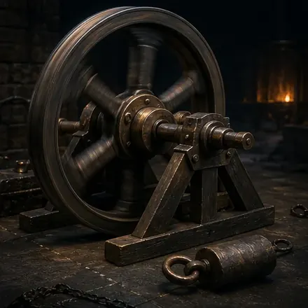
飛輪儲存 48 kJ 轉動能，升井系統每秒輸出 8 kJ。暫忽略額外輸入。
飛輪最多可維持這項輸出多久？
能量、功率、轉動儲能
t＝E／P＝48 kJ÷8 kW＝6 s。
證據：六秒飛輪儲能
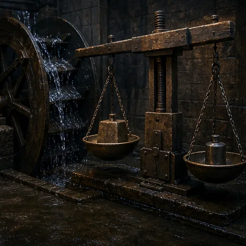
機關輸入功 20 kJ，真正用來抬升重錘的有用功只有 15 kJ，其餘成為摩擦熱與聲音。
效率約為多少？
機械效率、能量耗散
效率＝有用輸出功÷輸入功＝15÷20＝75%。
證據：七成五機效
支點左側 2 m 處掛 300 N，右側要掛一只 200 N 配重使樑平衡。
右側配重應離支點多遠？
力矩、靜力平衡
力矩平衡：300×2＝200×r，所以 r＝3 m。
證據：三米平衡臂
官尺每一格比母尺短 2%，帳簿卻用官尺量距離、用母尺標示作用力，讓計算出的功系統性偏小。
最有力的查核方式是？
功、校準、系統誤差
功等於力乘同方向位移；統一長度標準後重算，才能隔離尺度造假的系統誤差。
證據：混尺造假帳
四股繩承托 16000 N 的石閘，忽略摩擦。
所需拉力約為？
四股繩平均承重，F＝16000÷4＝4000 N。
總質量 800 kg 的囚籠升高 10 m，取 g≈10 m/s²。
增加的重力位能約為？
mgh＝800×10×10＝80000 J＝80 kJ。
要在 20 s 內完成 100 kJ 有用功，系統效率為 50%。
平均輸入功率至少多少？
輸入能量＝100÷0.5＝200 kJ；P＝200÷20＝10 kW。
左側 400 N 位於支點外 1.5 m；右側配重位置固定在 3 m。
右側至少掛多少力可恰好平衡？
400×1.5＝F×3，所以 F＝200 N。平衡後才能插銷切斷主軸。
百工監開始沉井。公開逃生道能帶走囚匠與口供；封庫暗軌則通往天理衡的零度母尺。
算式可以停止機關，不能替眾人決定真相的去處
柳照微百工囚匠沿城門架起公開量尺，每停一座副機，就有人把數據抄成第三份。天理局能殺一名證人，卻抹不掉全城同時重做的結果。
謝驚弦雷火盟與河運盟會守外環。你只需進核心，找出能讓天理衡可逆停機的狀態；別讓救人的機關先被你的結論毀掉。
顧玄策母鏡、零度尺與密曜星圖三件原器已能重建基準。這條路人少，卻能直證每個官版參數如何被換掉。
裴無咎我造的第一版有可逆止機，你父親也在最後一頁簽過驗證。朝廷刪去那一頁，不代表它從未存在。
旁白環形局室同時升壓、蓄熱、分流、計時與聚光。任何一環算錯，都會把可逆停機變成不可逆崩毀；六組證據必須合成同一個狀態模型。
寧觀瀾外環週期正在縮短，表示負載持續增加。只看瞬間讀數會誤判安全，我們需要壓力、溫度、功率與週期的共同趨勢。
裴無咎可逆止機會保留殘卷與官檔，也保留日後再啟動的危險；徹底斷軸能讓它永遠停下，代價是所有原始記錄一同化灰。
沈硯今日不是替父親報仇，也不是替師父贖罪。我要先證明兩條停機路都算得通，再讓一路同行的人決定真相應當活在哪裡。
最後一次校準前，先把主控讀數交給誰同步？
液柱兩端高度差 0.8 m，液體密度 1000 kg/m³，取 g≈10 m/s²。
對應壓差約為多少？
液體壓力、壓差
Δp＝ρgΔh＝1000×10×0.8＝8000 Pa。
證據：八千帕壓差
10 m 銅弧升溫 50°C，線膨脹係數取 1.7×10⁻⁵／°C。
伸長量約為多少？
熱膨脹、科學記號
ΔL＝αLΔT＝1.7×10⁻⁵×10×50 m＝0.0085 m＝8.5 mm。
證據：八點五毫米熱伸
6 Ω 與 3 Ω 兩支路並聯接到 12 V 主源。
總電流約為多少？
並聯電路、歐姆定律
各支路電流為 2 A 與 4 A，總電流為 6 A。
證據：六安培分流
衡輪連續四次週期為 8.0、7.5、7.0、6.5 s，負載每輪增加。
若趨勢不變，下次週期最合理的估計是？
週期、資料趨勢、外推
每次縮短 0.5 s，線性外推下一次約為 6.0 s；仍應標註這是趨勢模型。
證據：半秒縮週期
凸透鏡焦距 25 cm，止機刻板位於鏡前 50 cm。要把同樣大小的倒像投到感光片。
感光片應放在鏡後多遠？
凸透鏡成像、二倍焦距
物距為 2f 時，像距也為 2f，形成倒立、等大的實像。
證據：等距等大實像
壓差、熱伸、總電流、輪期與像距五組讀數都到達原卷所列窗口，只有官版把『同時滿足』改成『任一滿足』。
安全停機應採哪種判準？
系統模型、多變量驗證、可逆控制
互相關聯的複合系統不能以單一讀數代替整體狀態；共同窗口與重測能降低誤觸發。
證據：五量同窗止機
壓力 200 kPa 作用在面積 0.05 m² 的活塞上。
活塞受力約為？
F＝pA＝200000×0.05＝10000 N＝10 kN。
加熱器以 2 kW 工作 30 s，忽略損耗。
輸入能量約為？
E＝Pt＝2000×30＝60000 J＝60 kJ。
12 V 電源供應並聯支路，總等效電阻 2 Ω。
總功率約為？
I＝V／R＝6 A，P＝VI＝12×6＝72 W。
輪期進入 6.0 s 窗口、壓差與熱伸已穩定，光學感測器仍差 5 cm 才成清晰實像。
此刻最安全的動作是？
可逆停機要求多變量同時落入窗口；先完成最後校準並整體重測，才不會讓止機楔反成爆裂源。
天理衡已進入安全窗口。你可以讓止機楔緩慢落下，保留所有卷檔；也能斷軸焚卷，讓它永不能再啟。
第十道刻線不是答案，而是讓人拒絕成為誤差的權利
柳照微三印開門後，城外每一份副本都同時多出第十道刻線。它不是藏在某件原器裡，而是要人和、理證與殘卷互相承認，才肯顯形。
蘇檀囚匠、船工、觀測生各帶一把不同的尺來。若同一結論能跨過不同人的量具仍成立，這座無名院就不能再把真相收回一個名字裡。
顧玄策母鏡、零度尺與原始卷號在地底拼出一條未登記的校準廊。第十道刻線只接受原器逐項對準；這條路最短，也沒有旁人能替你補一次失手。
裴無咎我在第九行簽過名，卻從未見過第十行。你父親死前說他留了一個『任何掌衡者都不能刪去的否決』，我到今日才知道那不是一句話，而是一套檢驗。
旁白地下院沒有王座，只有十代人留下的尺、秤、擺輪與重複量測簿。每一代只改了一個看似微小的數；『可犧牲誤差』並非出自一人之手，而是在無數次無人署名的捨入中長成。
寧觀瀾所以真正的問題不是找出第一個惡人。若平均值掩去離群者、官尺把系統偏差當成天意，再善良的人也會在同一套算法裡做出同樣的犧牲。
沈硯父親留下的第十行是：『凡代價由未曾同意者承受，此式不得自行執行。』它不能替人決定答案，只能逼掌衡者停手、公開誤差，再問一次。
裴無咎先完成六組校準。若證明第十行能在不同量具與不同操作者之間重現，天理衡就不再只聽掌衡令；但也再沒有一個人能把責任推給機關。
父親的否決句第一次完整顯現，你先交給誰驗？
同一枚標準砝碼由五人獨立量得 99.8、100.1、100.0、100.2、99.9 g；量具最小刻度為 0.1 g。
最合理的結果紀錄是？
平均值、隨機誤差、有效數字
平均值為 100.0 g，但重複量測仍有散布；把散布寫出來，才不會把不確定度偽裝成絕對真值。
證據：百克復衡紀錄
兩條互相垂直的索分別向東拉 30 N、向北拉 40 N，中央銅環靜止前需由第三條索抵消合力。
第三條索的力最接近？
向量合成、平衡力、三四五三角形
互相垂直的 30 N 與 40 N 合力為 50 N、方向東北；平衡力大小相等、方向相反，故向西南 50 N。
證據：五十牛頓反向索
兩枚等質量銅人分置直尺 20 cm 與 80 cm 處，尺重忽略。院簿卻把支點畫在 40 cm。
系統重心應在何處？
質心、力矩、加權平均
等質量物體的共同重心在位置平均值：(20＋80)÷2＝50 cm；40 cm 的官圖會造成固定偏載。
證據：五十厘米共同重心
同質量、同半徑的實心盤與薄環由同一斜坡同高處無滑動滾下。薄環的質量離轉軸較遠。
哪個會先到坡底？
轉動慣量、能量守恆、滾動
實心盤 I＝½MR²，小於薄環 I＝MR²；同樣位能下，實心盤分配到平動的比例較高，會先到達。
證據：實盤先行坡痕
彈簧常數 200 N/m，匣門被壓縮 0.10 m 後鎖住；釋放時彈性位能驅動否決牌升起。
匣中儲存的彈性位能為多少？
虎克定律、彈性位能
彈性位能為 ½kx²＝0.5×200×0.10²＝1.0 J。
證據：一焦耳否決匣
十代官尺量同一母桿，結果逐代由 100.0 cm 漂到 98.2 cm；每代重複量測內部都很一致。
這種現象最像哪類問題？
準確度、精密度、系統誤差
每一代內部結果精密，卻共同偏離母桿，顯示校準基準逐代漂移的系統誤差；精密不等於準確。
證據：十代尺度漂移
四次獨立讀數為 12.1、12.3、12.2、12.2 cm。
平均值最合理記為？
總和 48.8 cm，除以 4 得 12.2 cm；結果仍應搭配量具刻度與散布說明。
兩股垂直拉力為 6 N 與 8 N。
合力大小是多少？
合力為 √(6²＋8²)＝10 N。方向也必須由兩分量共同決定。
固定力矩 12 N·m 作用在轉動慣量 3 kg·m² 的盤上。
角加速度為多少？
τ＝Iα，所以 α＝12÷3＝4 rad/s²。
兩組人以不同量具得出相同停機判據，但都事先看過官版答案。
要證明判據不依賴權威暗示，下一步應？
盲化、換操作者與交叉量具能降低暗示及共同系統偏差，讓第十行成為可重做的檢驗。
第十行已通過交叉校準。你可把父親的否決條款接回天理衡，讓所有自動命令先接受人的拒絕；也可封存十代原始改值表，保住追責的完整技術根源。
最後一把尺，不該比使用它的人更接近天理
柳照微否決條款傳到四城後，船工先停下水閘，囚匠停下飛輪，觀測生停下報時鐘。不是反叛，而是所有人等著看同一組重測能否再次成立。
謝驚弦我守電網，霍離守熱井，江濯月守水路；蘇檀把原始讀數抄成盲卷，寧觀瀾校時。沒有人掌握全局，正因如此，任何一處造假都會被另一處撞見。
顧玄策十代改值表已封入四鑰匣。我、祁望舒、寧觀瀾與裴無咎各持一鑰；四人不到齊，任何人都不能改動天衡臺的零點。
祁望舒制度不是信任誰永遠清白，而是假定每個人都有可能犯錯。今日以原表定責，明日若我們也拒絕受查，沈硯，你必須連我們一起攔下。
旁白四城負載同時湧入天衡臺：水門動量、升井功率、熱井效率、雷網感應與地脈彈性彼此牽動。這不是一題考卷，而是十一章留下的現象在同一刻要求答案。
寧觀瀾若只求某一處讀數漂亮，代價會被推到另一城。最後的模型必須同時寫出能量從哪裡來、動量往哪裡去，以及誤差最後落在誰身上。
裴無咎我曾相信只要公式夠準，就能替不在場的人作決定。今日我只保留一個位置：在你們完成重測後，公開承認第一版是我造的，錯誤也由我署名。
沈硯我們不替天地寫下唯一答案。我們只建立一條規則：任何結論都能被重做，任何代價都必須被看見，任何人都有權要求再量一次。
全臺合校前，最後一份未署名數據交由誰覆核？
質量 2 kg 的木車以 3 m/s 向東，撞上靜止的 1 kg 木車後扣在一起，軌道阻力可忽略。
兩車共同速度約為？
動量守恆、非彈性碰撞
動量守恆：(2×3＋1×0)÷(2＋1)＝2 m/s，方向向東；黏合碰撞的動能不守恆。
證據：向東二米合車
不可壓縮水流由截面 0.20 m²、流速 2 m/s 的寬管進入截面 0.05 m² 的窄管。
窄管流速約為？
連續方程、流量守恆
連續方程 A₁v₁＝A₂v₂，故 v₂＝0.20×2÷0.05＝8 m/s。
證據：八米每秒窄流
熱井每輪吸收 1000 J 熱量，對升井機做 300 J 有用功，其餘排向冷渠。
這一輪熱效率為多少？
熱效率、能量守恆
效率＝有用功÷吸收熱量＝300÷1000＝30%；其餘能量並未消失。
證據：三成熱功效率
線圈磁通量在 0.20 s 內均勻改變 0.60 Wb；先以單匝近似，方向由楞次定律判斷。
感應電動勢大小約為？
電磁感應、法拉第定律、楞次定律
法拉第定律大小 |ε|＝|ΔΦ／Δt|＝0.60÷0.20＝3 V；方向會反抗磁通量的改變。
證據：三伏感應環
質量 2 kg 的配重接在 k＝50 N/m 的理想彈簧上，離平衡點 0.20 m 時由靜止釋放。
此刻系統的機械能為多少？
簡諧運動、彈性位能、能量守恆
初始能量全為彈性位能：½kx²＝0.5×50×0.20²＝1.0 J。
證據：一焦耳回正能
四城總負載由多個獨立量測相加；每項都有不確定度。官吏提議只公布總和，不公布各項來源與範圍。
最能避免代價再次被藏起的做法是？
誤差傳遞、可追溯性、模型透明
總值必須能追溯到各輸入及不確定度；公開來源與重測方法，才能知道誤差最後由誰承受。
證據：四城誤差全圖
1 kg 車以 4 m/s 撞上靜止的 3 kg 車並黏合。
合體速度約為？
動量守恆：v＝(1×4)÷(1＋3)＝1 m/s。
寬管截面是窄管的 5 倍，穩定不可壓縮流動。
窄管流速是寬管的幾倍？
流量相同時 Av 為常數，截面縮為五分之一，流速增為 5 倍。
熱機吸收 2.0 kJ，效率 40%。
能輸出的有用功約為？
W＝ηQ＝0.40×2.0＝0.8 kJ；剩餘熱量必須有安全排放路徑。
水、熱、電、力學四組讀數皆進入範圍，唯四城誤差圖少了一城的原始記錄。
此刻最符合第十行的動作是？
缺少可追溯資料就無法知道代價落在哪裡；先暫停、補測並取得受影響者確認，才符合人的否決條款。
四城已同時落入安全窗。你可以拆分天衡權限，讓各地保有量測、否決與重啟的一票；也可以保留四鑰母尺，以可追責的單一基準維持秩序。
天理不再由一座樓、一枚印或一個名字獨占
天理衡停下後，柳照微把城門外的副本逐份分送。船工、囚匠、觀測生與雷火盟輪流重做量測；沈硯沒有成為新的裁決者，而是讓每個能看懂刻度的人都成為見證。裴無咎的功過被寫在同一頁，沈父拒簽的空白也終於留下姓名。
多年後，孩子們在市集借三片單孔板學光路。沒有人需要先問官印，才敢說自己看見了什麼。
原器仍在，但任何一次啟封都必須留下可追索的手
顧玄策與寧觀瀾接管封庫，母鏡、零度尺、真曆與官版殘卷分置四處，任何人都無法獨自改完一套標準。沈硯將可逆止機的最後一頁封在透明匣中，讓制度記住：最危險的從來不是誤差，而是誰有權把別人的命寫進誤差。
每年開庫，四方持鑰者要在百姓面前交叉校準。裴無咎沒有得到赦免，卻被允許以證人身分補完原卷。
有些師門不是被洗清，而是被後來的人重新定義
沈硯帶著可逆止機圖離開西京，沒有接下天理局的權位。裴無咎在山門外放下斷尺，第一次不以師父的口吻替他選路。二人用餘生重寫折衡門規：所有結論必須能重做，所有代價必須由承受者先知道。
山下偶爾有人帶著壞鐘、沉舟或錯尺求助。新折衡門不問來者門第，只先問現象是否還在。
主軸永遠停了，名字也一同失去可以被驗證的地方
沈硯斷軸焚卷。天理衡再無重啟可能，城中的壓力與火光也在黎明前散去；然而官版、原卷與沈父的拒簽同成灰燼。百姓記得有人救了城，卻無法再證明是誰把人命改成誤差。這不是壞結局，只是一條以遺忘換取安全的路。
裴無咎沒有替自己辯解。風把最後一片焦紙帶過鐘樓，紙上只剩一個無法辨認的衡字。
沒有人擁有天理；每個承受代價的人，都擁有令它停下的一票
沈硯拆去天衡臺唯一的掌衡座，把量測、重測、否決與重啟分給四城。柳照微保存人的證詞，蘇檀保存盲驗原卷，江濯月、霍離與謝驚弦分守水、熱、電三網；寧觀瀾校時，顧玄策與祁望舒公開每次啟封，裴無咎則在第一版下補上自己的名字與過錯。第十行不再是一句密語，而成為所有機關都必須接受的停手規則。
多年後，孩子問沈硯哪一把尺最準。他把尺交到孩子手中：『能讓別人重做，也容得下別人說停的那一把。』
標準會變，重做的方法與反對的權利必須留下
四城各保留一套量具與完整原始數據，每季交換操作者盲測。新標準不由朝廷頒下，而在公開爭論與重複量測後暫時成立。它比舊天理衡慢，也常因一票否決而停工；但第一次，停下來不再被視為背叛，而是系統承認自己可能算錯。
市集牆上永遠留著一塊空白，任何人都能貼上與官數不同的讀數，只要願意說明怎麼量、讓別人再量。
秩序沒有被摧毀，而是第一次被迫留下誰動過它的證據
零度母尺、十代改值表、停機卷與重啟楔分置四處。顧玄策、祁望舒、寧觀瀾與民間量測者各守一鑰；每次啟封都在眾人面前交叉校準。沈硯沒有相信制度會自己變善，只把每次改值、反對與受影響者的名字變成不能刪除的紀錄。
四鑰偶有爭執，天衡臺因此停過許多次。城中人漸漸明白：能被迫停下的秩序，才不是另一座天理衡。
沈硯拒絕留下最後一座中心，把答案送回每個仍有現象的地方
天衡臺的主軸被拆成九段，交給一路同行的人帶往河運、山關、地爐、雷澤與觀星臺。沒有全城共用的唯一標準，交換與校準因此變得艱難；但再也沒有一個中心能在遠處替所有人決定何者可被犧牲。沈硯與裴無咎沿路修鐘、驗尺，也沿路承認彼此仍有算錯的時候。
江湖沒有得到永遠正確的答案，只留下了一條任何人都能沿著證據走回去的長路。
情緣只有這三人。裴無咎固定「師徒羈絆」，其餘登場者固定「重要同伴」，不論好感多高都不會進情緣。
民證同行者
序章登場｜可達上限 +5
你總把最危險的位置留給自己。若還有下一座會塌的樓，至少先告訴我你準備站在哪裡。
我替眾人抄證詞，卻總在最後多留一行給你。不是案情，是想知道你今日有沒有平安回來。
城外副本已有人守。你不必每一步都走在最前面；答應過我的位置，我會替你留著。
普通結局柳照微留在沈硯身旁整理萬民證詞。兩人往後查過無數錯尺與沉舟，也把每次平安歸來當成比結案更重要的答案。
完整版結局天衡臺散場後，柳照微與沈硯一同走入人群。她保存眾人的證詞，他重做眾人的量測；江湖最後記住的，是兩人總會替彼此留一條歸路。
河運盟主
第二章登場｜可達上限 +4
逆流不難，難的是知道哪一段水肯托住船。你若還要往上游走，我可以替你掌舵，但別再一聲不響跳進急流。
我見過太多人把遠行說成身不由己。你若真要走，告訴我去處；你若願意回來，河上總有一盞燈。
四城水路已通。我不問你最後選哪一座岸，只問那座岸上，能不能替我留一個位置。
普通結局江濯月與沈硯乘逆流舟往返各地，替船工驗載、替渡口重畫水線。船首兩盞燈從此總是一起亮，也總是一起返航。
完整版結局江濯月把共衡水尺帶上逆流舟，沈硯則把家安在每一段可重測的航路上。多年後人們仍能在兩盞並行的船燈下找到他們。
格物醫者
序章登場｜可達上限 +5
我替你包紮過的傷，比你肯承認的失手還多。別只會計別人的代價；你的命也該寫進式子裡。
每逢你說『再量一次』，我就知道你還不肯放棄。可若有一天連你也撐不住，記得先把手伸給我。
第十行要人有權說停。這一次我先替你說：累了就停，我會陪你把剩下的數慢慢重做。
普通結局蘇檀與沈硯把折衡門改成兼收傷者與疑難機關的小院。她治人，他修械；兩人都不再把疼痛當成可以省略的誤差。
完整版結局蘇檀留在沈硯身邊主持盲驗與醫舍。每次共衡前，她先問承受代價的人是否願意；每次夜深，也總有人替沈硯留一盞不必解題的燈。
這張表是用 data/game.json 的判定規則直接解出來的,生成頁面時會重跑一次驗證——解不出真結局就不會產出這一節。
| 章 | 對白抉擇 | 章末抉擇 | 這一步拿到什麼 |
|---|---|---|---|
| 序章 | 先信證詞,拿數據去驗 | 救人｜先穩住巨鐘與鐘守 | 蘇檀 +1；柳照微 +2、旗標 prologue_case_strong、旗標 keeper_saved |
| 第一章・殘軸工坊 | 先解鎖療傷，再請他指認機關 | 奪名冊｜公開河運涉案名單 | 柳照微 +1；祁望舒 +2、旗標 registry_exposed |
| 第二章・逆流舟 | 先疏散下層乘客，再查漏水 | 穩舟救人｜保住全船與江濯月 | 柳照微 +1；江濯月 +2、柳照微 +1、旗標 river_passengers_saved、旗標 jiang_alliance |
| 第三章・百步無痕 | 與顧玄策共享量測，共同查辦 | 追奪密箭｜截下裴無咎暗碼 | 顧玄策 +1、旗標 gu_open_cooperation；祁望舒 +1、裴無咎 +1、旗標 wugou_cipher_recovered |
| 第四章・無焰之爐 | 先封爐心，保住名冊與試樣 | 開渠洩壓｜先救出全部工匠 | 顧玄策 +1、旗標 forge_records_sealed；霍離 +2、柳照微 +1、旗標 forge_workers_saved、旗標 huo_alliance |
| 第五章・雷火盟 | 保留觀測席，公開量測與接地過程 | 引雷入地｜保住盟眾與公開試驗 | 謝驚弦 +1、旗標 leihuo_open_test；謝驚弦 +2、柳照微 +1、旗標 leihuo_witnesses_saved、旗標 xie_alliance |
| 第六章・觀星臺 | 護送觀測生與原始水鐘紙上臺 | 鳴鐘公表｜公開真曆並救下觀測生 | 寧觀瀾 +1、旗標 observatory_students_protected；寧觀瀾 +2、柳照微 +1、旗標 true_ephemeris_published、旗標 observatory_students_saved、旗標 ning_alliance |
| 第七章・破鏡城 | 與裴無咎私下逐頁驗算，不先落名 | 藏鏡追源｜帶走天理衡母鏡 | 裴無咎 +1、旗標 wugou_private_verification；裴無咎 +2、顧玄策 +1、旗標 master_mirror_secured |
| 第八章・百工天獄 | 先驅動升井，讓深層囚匠升到安全線 | 百工出獄｜開主門護送囚匠 | 霍離 +1、旗標 deep_artisans_raised；霍離 +2、江濯月 +1、柳照微 +1、旗標 artisan_league_freed |
| 第九章・天理殘卷 | 同步城外眾證網，讓讀數無法獨占 | 折衡止機｜可逆停機並保全殘卷 | 柳照微 +1、旗標 public_measurement_network；蘇檀 +1、旗標 tianli_reversibly_stopped |
| 第十章・無名度量院 | 與裴無咎逐筆比對十代改值，釐清責任 | 還人一票｜接回拒絕條款 | 裴無咎 +1、旗標 tenth_line_traced；柳照微 +1、蘇檀 +1、旗標 veto_clause_restored |
| 第十一章・天地共衡 | 交給柳照微與九路同行者分段交叉覆核 | 萬手共衡｜拆分量測與否決權 | 柳照微 +1、旗標 allies_crosschecked_final；柳照微 +1、江濯月 +1、旗標 shared_standard_opened |
每章開場走 A 線還是 B 線，不是選單選的，是進章當下用旗標算出來的(engine.js routeFor)：條件全中(all)或任一中(any)就是 A 線，否則 B 線。A/B 只換開場、線索敘述與可用的活證，六證與破局戰題目相同。
| 章 | A 線 | B 線 | A 線條件(旗標來自) |
|---|---|---|---|
| 第一章 | 護鐘線 | 循印線 | keeper_saved(來自 序章章末：救人｜先穩住巨鐘與鐘守) 且 prologue_case_strong(來自 序章章末：救人｜先穩住巨鐘與鐘守) |
| 第二章 | 密圖登舟 | 官牒查舟 | apprentice_protected(來自 第一章・殘軸工坊章末：護學徒｜帶人與密道圖離開) |
| 第三章 | 江圖登嶺 | 殘頁追箭 | jiang_alliance(來自 第二章・逆流舟章末：穩舟救人｜保住全船與江濯月) |
| 第四章 | 冷渠入爐 | 密函穿窯 | witness_saved(來自 第三章・百步無痕章末：回身護證｜架盾保住採藥客) |
| 第五章 | 盟眾引路 | 熱核追電 | forge_workers_saved(來自 第四章・無焰之爐章末：開渠洩壓｜先救出全部工匠) 且 huo_alliance(來自 第四章・無焰之爐章末：開渠洩壓｜先救出全部工匠) |
| 第六章 | 公證登臺 | 磁圖潛臺 | leihuo_witnesses_saved(來自 第五章・雷火盟章末：引雷入地｜保住盟眾與公開試驗) 且 xie_alliance(來自 第五章・雷火盟章末：引雷入地｜保住盟眾與公開試驗) |
| 第七章 | 公堂照鏡 | 暗坊尋光 | true_ephemeris_published(來自 第六章・觀星臺章末：鳴鐘公表｜公開真曆並救下觀測生) 且 observatory_students_saved(來自 第六章・觀星臺章末：鳴鐘公表｜公開真曆並救下觀測生) |
| 第八章 | 百工共證 | 母鏡校械 | mirror_testimony_published(來自 第七章・破鏡城章末：照城存證｜公開沈家驗簿與鏡證) |
| 第九章 | 眾證入局 | 原器校局 | artisan_league_freed(來自 第八章・百工天獄章末：百工出獄｜開主門護送囚匠) |
| 第十章 | 眾人校匣 | 原卷追刻 | 第九章普通結局＝普通結局・萬民見證 或 已成人和印 |
| 第十一章 | 萬手同衡 | 一尺定衡 | veto_clause_restored(來自 第十章・無名度量院章末：還人一票｜接回拒絕條款) |
解鎖條件是判定式,解法是怎麼拿到。人物與結局類的解法都用 真結局路線 實際算過。
| 名稱 | 解鎖條件 | 解法 | 稱號 |
|---|---|---|---|
| 雨夜鐘鳴 | 完成序章 | 照本站該章的六證正解與破局戰答案打完即可。 | — |
| 殘軸留痕 | 完成第一章 | 照本站該章的六證正解與破局戰答案打完即可。 | — |
| 逆流問舟 | 完成第二章 | 照本站該章的六證正解與破局戰答案打完即可。 | — |
| 百步見痕 | 完成第三章 | 照本站該章的六證正解與破局戰答案打完即可。 | — |
| 無焰有證 | 完成第四章 | 照本站該章的六證正解與破局戰答案打完即可。 | — |
| 雷火可驗 | 完成第五章 | 照本站該章的六證正解與破局戰答案打完即可。 | — |
| 星下定時 | 完成第六章 | 照本站該章的六證正解與破局戰答案打完即可。 | 星下校時人 |
| 鏡不藏光 | 完成第七章 | 照本站該章的六證正解與破局戰答案打完即可。 | — |
| 百工出獄 | 完成第八章 | 照本站該章的六證正解與破局戰答案打完即可。 | — |
| 天理停衡 | 完成第九章並看見一個普通結局 | 照本站該章的六證正解與破局戰答案打完即可。 | — |
| 第十行 | 完成第十章 | 照本站該章的六證正解與破局戰答案打完即可。 | — |
| 天地共校 | 完成第十一章 | 照本站該章的六證正解與破局戰答案打完即可。 | — |
| 名稱 | 解鎖條件 | 解法 | 稱號 |
|---|---|---|---|
| 六證成卷 | 任一章取得六證 | 任一章六證全答對。六證是一次性作答、答錯不能重來,照本站該章六證的「← 正解」選。 | — |
| 招招有據 | 任一章四場破局戰全對 | 任一章四場破局戰全對(破局戰答錯會扣氣勢,不會鎖住成就,可重來該章)。 | — |
| 格物無漏 | 任一章六證且四戰全對 | 同一章同時做到六證 + 四戰全對(通關小卡會出現「格物無漏」)。 | 格物無漏 |
| 十一卷無漏 | 第一至十一章皆六證且四戰全對 | 第一到十一章每章都「格物無漏」——含第十、十一章,所以必須先走通真結局路線解鎖後段。 | 十一卷校書人 |
| 宗師問天 | 在「宗師」難度完成第十一章 | 難度選「宗師」(無提示、只給規則)並通關第十一章;前置是先解鎖第十章隱藏門扉,照「真結局路線」走即可。 | — |
| 誤差亦須署名 | 答對第十章「十代校準牆」與第十一章「四城誤差圖」 | 第十章「十代校準牆」與第十一章「四城誤差圖」這兩件證物都要答對(其他證物答錯不影響本條)。 | — |
| 名稱 | 解鎖條件 | 解法 | 稱號 |
|---|---|---|---|
| 生死相託 | 任一人物好感達 +5 | 任一人好感 +5。照「真結局路線」走即可——這條路線走完 柳照微、裴無咎、霍離 都是 +5;最快的是柳照微:序章章末「救人」+2、第一章對白「先解鎖療傷」+1、第一章章末「護學徒」+2,第一章結束就 +5。 | — |
| 三方深交 | 同時 3 人好感≥+3 | 同時 3 人好感 ≥+3。照「真結局路線」走即可——該路線 9 人全部 ≥+3(共 9 人),遠超門檻。 | 九路同道 |
| 故人共尺 | 裴無咎好感≥+4 | 裴無咎 ≥+4(不是 ≥1)。他的好感只給「奪物線」:第五章「截取磁圖」+2、第六章「入庫奪圖」+2、第七章「藏鏡追源」+2 是三個大頭;照「真結局路線」走即可可拿到 +5。 | 折衡故人 |
| 九路同衡 | 9 名登場人物皆好感≥+1 | 9 人都要登場且好感 ≥+1(寧觀瀾第六章才登場,所以至少要打到第六章以後)。照「真結局路線」走即可——該路線 9／9 全中。 | — |
| 名稱 | 解鎖條件 | 解法 | 稱號 |
|---|---|---|---|
| 人和成印 | 完成人和印 | 好感 ≥+2 者達 3 人且橫跨 2 個立場(民/學/律)。最省力是「柳照微+霍離(民)+顧玄策或蘇檀(學或律)」;或走師徒線:裴無咎 ≥+4 且另有 2 人 ≥+1。 | — |
| 理證成印 | 完成理證印 | 通關章數 ≥7 且第七、八、九章都完整通關——正常一路打下來就會有,不用特別繞。 | — |
| 殘卷成印 | 完成殘卷印 | 人證旗標 ≥2(救鐘守/護學徒/救乘客/護證人/救工匠/保盟眾/救觀測生/公開鏡證/百工出獄/眾證網)＋原器旗標 ≥2(銅印/名冊/殘頁/暗碼/熱核/磁圖/星圖/母鏡/零度尺/原器鏈)＋後段關鍵物之一(公開鏡證/天理母鏡/百工盟冊/零度母尺)。重點:救人線與奪物線要各拿幾章,全救或全奪都會缺一邊。 | — |
| 天理四歸 | 看過 4 種普通結局 | 四種普通結局要看過 4 次。結局不是選的,是用第九章當下的三方分數算的(人證＝柳照微＋江濯月＋霍離、入庫＝顧玄策＋寧觀瀾＋零度母尺×3、歸山＝裴無咎×2＋天理母鏡×2,最高者勝;第九章選「斷軸焚卷」則直接是無名灰燼)。成就與結局紀錄存在收藏庫、跨局累積,所以分幾輪刷沒關係。 | 殘卷收藏家 |
| 天地四卷 | 看過 4 種完整版結局 | 四種完整版結局:真結局「天地共衡」、第十一章選萬手共衡但條件不全→公議新尺、選四鑰定衡→四鑰守衡、其餘→無主長路。同樣跨局累積。 | 天地藏卷人 |
| 天地共衡 | 達成真結局「天地共衡」 | 真結局七項缺一不可:三印全成、通關第十與十一章、第十章接回否決條款、第十一章對白選九路交叉覆核、第十一章章末選萬手共衡、3 人好感 ≥+3、裴無咎 ≥+1。照「真結局路線」走即可(整張表已驗算過)。 | 共衡人 |
| 名稱 | 解鎖條件 | 解法 | 稱號 |
|---|---|---|---|
| 敗卷重開 | 某章破局失敗後再通關 | 故意在某章破局戰輸掉(氣勢歸零),再重打該章通關即可。 | — |
| 一息尚存 | 定心符自動發動保命一次 | 帶著開局就有的「定心符」,讓氣勢被打到歸零一次,由它自動擋下。 | — |